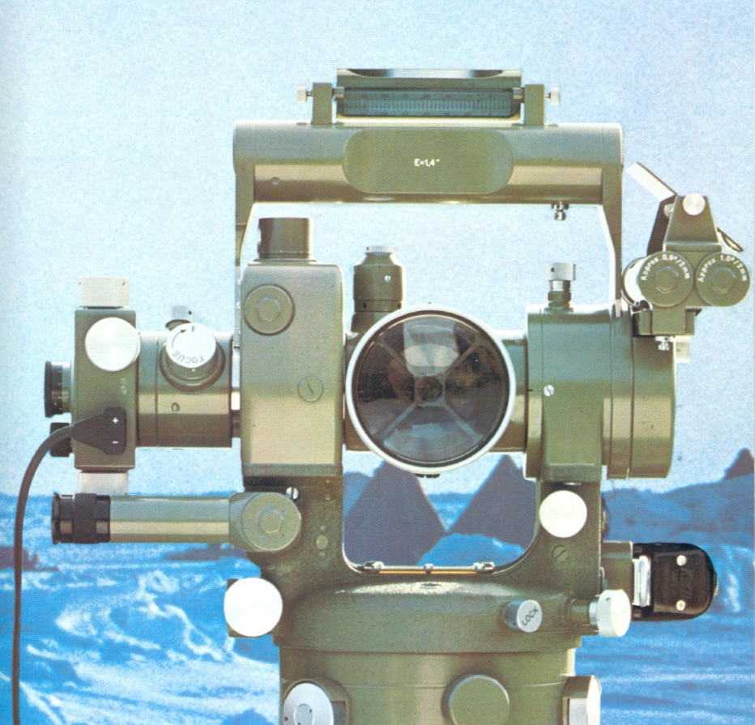
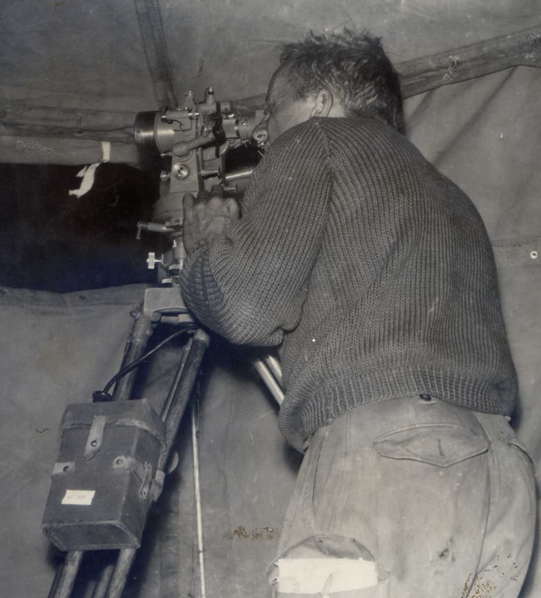
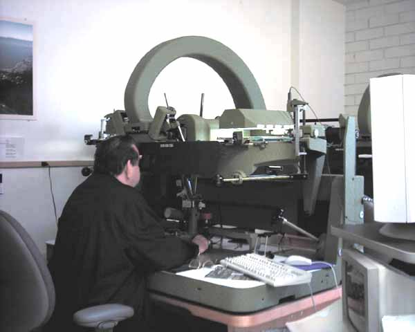

THE ARMY YEARS – PART 2

PREFACE
Northern Command Field Survey Unit
In about mid 1962 all Field Survey Sections in the Corps were re-designated ‘Field Survey Units’, a term considered more appropriate to a Major’s command. Against that logic the term ‘unit’ is used generically for any military formation regardless of size. A better term might have been ‘Troop’. In this writing I have used the term ‘Unit’ throughout other than when referring to events before my arrival in late 1961.
A honeymoon (from Part 1 ‘The young Soldier Surveyor)
Sunday the 27th August turned out to be a beautifully fine and sunny day after all the rain. The sea and the harbour were sparkling blue. Before departing Sydney for our Katoomba honeymoon destination we called on Rex and Beryl staying in a nearby hotel and (prompted by Wendy no doubt) I thanked them for our wonderful wedding and all pertaining to it. Beryl presented me with a hand knitted heavy jumper in rust coloured wool – something of a surprise from that machiavellian woman. We then called on Grandma Weight who had been unable to attend the wedding and in the early afternoon hit the road in my Simca Aronde for Katoomba and the Carrington Hotel arriving at dusk. The Carrington was a fine old 19th century hotel that was very accustomed to honeymoon couples. We were to remain there for two weeks perfect weather all the time, and explored the beautiful Blue Mountain attractions for which Katoomba is famous. I was astonished to find the iconic ‘Three Sisters’ rock monoliths at the end of the main street of Katoomba. We drove west to the Jenolan Caves in the Great Dividing Range, Australia’s most famous caves and explored their depths. We dined in style every night attended by black tie waiters. We took numerous photos of our tripping.
This brings me to the end of my life as a ‘Young Soldier and Surveyor’ – a new life ahead, a very different life – married and a commissioned officer in the Australian Army.
It was a memorable two weeks; at the end of which we drove back to Bendigo and booked into a motel at Golden Square. I reported in to the Regiment the morning after our arrival to receive my posting order to the Northern Command Field Survey Section, still based in L Block Victoria Barracks. We arrived in Brisbane on the 10th September and checked into a motel for one night – that was all the Army would allow at that time.
Accommodation for a married couple
I had no hope at that stage – just married – of being allocated an army married quarter. The waiting list was lengthy and without children I had zero eligibility. Wendy had a personal contact with a woman through a friend who knew of a new house for rent at Camp Hill for nine pounds a week. My salary then was about 25 pounds a week so it was a fair chunk of my weekly pay. The house at 60 Hendra Street Camp Hill was unfurnished and we had no furniture. I was eligible for an interest free furniture loan from Army Amenities for a few hundred pounds and following the advice of the public servant responsible for administering the fund we went to Olsen and Goodchap at Woolloongabba and bought a few essentials – a bedroom suite (two beds, dressing table and wardrobe), a kitchen table and four blue vinyl covered chairs all in tubular steel, a ‘day/nighter’ divan and two lounge chairs. Wendy had furniture at Tenterfield left to her by her mother, very beautiful antique furniture as well as her own bedroom suit – double bed etc. But we had no money for bringing it to Brisbane and my Officer Commanding pointed out to me that I could use my Army entitlement for a removal to have the furniture brought from Tenterfield. Great! I did so – unaware that such action thereupon disqualified me from rental assistance thereafter. All of this happened very quickly and at least we finished up with a very well furnished house in Camp Hill – but no rental assistance.
Army support for married couples was patchy and I suppose for non-army people it might have seemed generous enough. Some of it had its origins in World War 2 and probably little had changed. For instance, wives were paid a separate ‘marriage ‘ allowance which together with the compulsory allocation of the member’s pay (about 30% I think) had to be paid into a separate bank account in the wife’s name. Motel accommodation on posting was limited to one night only; two nights in special circumstances. Rental assistance could only be paid where the member rented furnished accommodation. The logic was because a member was entitled to a full furniture removal from old station to new station or in the case of a newly married member from his wife’s home base, once that happened no further rental assistance would be paid. This meant that if a married quarter was not available the member had only two alternatives; privately rent a furnished house or leave his wife and family at the old station until a married quarter became available. Even when rental assistance was paid the member was required to submit proof each fortnight that he was constantly seeking cheaper accommodation supported by copies of newspaper advertisements with reasons for rejection of those that may have been cheaper. Statements from reputable letting agents that nothing cheaper was available could also be submitted. It was a painful process and I thought my ineligibility was probably not such a bad thing. At least we had our own furniture but clearly we could not continue to afford the rent we were paying on the Hendra Street house. Nevertheless, we stayed there for three months and then in December I came to hear of a home at Stafford that belonged to an army sergeant who had been posted to Toowoomba and he was seeking an army tenant. The rent was six pounds a week and on the 13th December we moved into 21 Willowie Street, Stafford. Our landlord was Sergeant Stanley Bombell, a World War 2 and Korean veteran with a Japanese wife.
NORTHERN COMMAND FIELD SURVEY UNIT
To work again and my OC Major Spencer Weldon Snow
But of course as soon as I arrived in Brisbane and despite accommodation problems I needed to report to work and re-meet my officer commanding, Major Spencer Weldon Snow. I knew there would be difficult times ahead; Major Snow was a difficult person to work for and his past was littered with both officers and soldiers who had either resigned or taken discharge rather than continue under his command. The Section had been based at Normanton the previous year and a number of stories were told of his irrational command practice. He had been my OC in New Ireland for 16 months and while my own relationship with him had not been difficult I was very aware that many others had great difficulty with him. I knew also that he was and had been for years a controlled alcoholic. Nevertheless, on my first contact with him as a lieutenant he was quite warm and friendly and accommodating to my settling in both domestically and at work.
There were two other officers in the Unit, Captain Ed Anderson the second-in-command and who I served under as a sapper when I first left the School at Balcombe and Lieutenant Peter Constantine who had been my sergeant instructor at the school. I got on well with both. Captain Anderson and Major Snow maintained a sort of ‘armed neutrality’ relationship; Peter seemed to brush him off and generally kept out of his path. Sergeant Bill (‘Flattie’) Davidson was in charge of records. Bill had been a Warrant officer Class 1 but had become a hopeless alcoholic and the Army would only offer him reengagement as a sergeant with the proviso that he stayed off the grog. Remarkably after a couple of drying-out incidents he beat it and as I knew him he was a teetotaller. Bill was a remarkably clever if unconventional mathematician and was working on some sort of mathematical process with a mathematician at the University of Queensland. Warrant Officer Kevin Walsh looked after the Multiplex photogrammetry on the ground floor and Sergeant Garney Cook was the Transport NCO. Staff Sergeant Johnny Pearce looked after the orderly room and all aspects of administration and stores. Johnny had been in that job when I first came to the unit as a sapper in 1956. Other that I recall were Warrant Officer Jim Booton, affectionately known as Father Booton, Sam Chambers, now a sergeant, Grant Small, Paddy Strunks, Peter Spiering, Tony Jones. There were others.
Our accommodation on the top level of ‘L’ Block Victoria Barracks was very basic. The OC occupied an office at one end of the floor. Next to it in line were three offices part enclosed, for the 2IC, troop officers and orderly room. Then there was the general draughting office and at the far end the survey records section run by Bill Davidson. My broader responsibility became survey records with Bill Davidson. The Unit was also responsible to maintaining the bulk map stocks in a large army warehouse on the river at Bulimba. There were some one million maps stored there known as mobilisation stocks. They were in crudely constructed racks and were covered in an accumulation of years of soot, I was told resulting from shipping on the Brisbane River from the days when the main Port of Brisbane was located in the river close to the city. Many of the maps were of World War 2 origin – old one to the mile coastal maps and the emergency four mile series.
A deteriorating relationship
As the weeks passed leading to Christmas my relationship with Major Snow started to deteriorate. I often found myself acting as a buffer between him and the fellows, a role that I did not enjoy. I find it hard to recall exactly what most were about. He would call me into his office over some matter or other that I may or may not have known about but which he saw as my fault or failure to take or not take some action about. Such sessions could last up to an hour. He had a habit of pulling on his earlobe whenever something was irritating him and this would go on and on. Sometimes Captain Anderson would rescue me from these trials. I often suspected he would be alcohol affected. He would ask for a written report about some matter or other and when I provided it another session would follow. It was variable. Some weeks nothing would come up and he would be pleasant and quite chummy. Peter Constantine, promoted to captain during that period, seemed to avoid him and I rarely saw Peter on our work level. I was never sure what he was up to.
I sometimes wondered at why one man should have such a depressing effect on another. Major Snow had been the reason for others, both officers and NCOs, even sappers, choosing to opt for discharge or transfer rather than continue to serve under him. I knew he had been responsible for at least two, one fairly senior captain and one junior NCO to have a nervous breakdown. I was determined not to let that happen to me but the longer I served under Snow the more I could appreciate what had happened to others.
The Officer’s Mess
I found myself a member of the Victoria Barracks Officer’s Mess. If officer’s messes have any order of seniority then this mess would have been the most senior. It was the mess that the State Governor attended on occasions. In those few months leading to Christmas The Mess held two ‘dining in nights, that is, a formal dinner where members wore their mess kit. For me that was a white mess jacket, white shirt and bow tie, red striped navy blue trousers with broad red cummerbund. Since the white linen mess jacket was worn open at the front, the cummerbund was essential to cover up the top of one’s trousers that had no waistband and had to be held up by braces. I went in to the mess with Peter Constantine and I remember him telling me that on his first mess night a year before he arrived without his cummerbund having forgotten to wear it and thinking as he drove in to Victoria Barracks what an untidy sort of uniform this is, tending to come apart in the middle. I had been in the process of obtaining officer’s pattern uniforms, service dress, safari jackets, some of which was free issue and some I had to pay for. On my very limited income I had to be modest in my purchases. The first dining in night I attended was members only. There might have been sixty to eighty officers attending in rank ranging from second lieutenant (one pip) to general – the General Officer Commanding Northern Command was Major General Wade. All would assemble in the anteroom where sherry was served from silver trays as we arrived sweet or dry with water being the only other option. After half an hour or so we would all troop in to the dining room where place names had been placed around the polished tables laid out in a U shape, silver mess cutlery laid out, candelabra alight down the centre of each table and maybe a few flowers in crystal vases.
My first experience attending a dining in night with wives (or at least a female partner) is told in a story below 2
> DINING IN THE MESS
>
> The first dining in we attended was in the Victoria Barracks Officers’ Mess (Brisbane). We had both dined in with the sergeants at the Regiment in Bendigo but this was a far cry from that. I had acquired a summer mess kit for the occasion, Wendy a cocktail dress (I think that is what it was called – attractive anyhow) and we fronted up. Perhaps I should point out that my commission was from the rank of sergeant through an officer qualifying course at Canungra – often referred to as a ‘knife and fork’ course.
>
> With some trepidation we entered the mess ante-room where sherries were being proffered on silver trays by stewards and tried to spy out someone we might know. I think fellow Corps officers Peter Constantine and Ed Anderson were there with their wives Nan and Betty. After twenty minutes or so the stewards started circulating, one with a bell, suggesting that we all move into the dining room. Now on entering the ante-room I had failed to notice the seating plan propped on a trestle near the door. I took Wendy’s arm and started to move toward the dining room when a brash young officer (he seemed so at the time) suddenly appeared and whisked Wendy away from me leaving me standing wondering what on earth was it all about. Peter came to the rescue and led me to the seating plan saying “look for the lady on you right”. Oh God. Who could that be? An elderly lady was waiting patiently near the door of the dining room – that must be her! It was, I approached the lady and introduced myself apologising for my tardiness – she smiled and said she fully understood and in we went. My dining partner proved to be very good company and an enjoyable night followed. After dinner I escorted her back to the ante-room and she was immediately claimed by her husband, an elderly lieutenant colonel, retired I think.
>
> And what of Wendy? She said she had had a most enjoyable time with her escort, a young captain whom I got to know later – not a bad bloke!
>
> Peter Constantine told me later that on his first dining in night in getting dressed he had forgotten to put on his cummerbund. He arrived thinking that his summer mess kit seemed to be a rather untidy arrangement with his blue trousers supported by braces sort of bouncing around his waist. He entered the anteroom (men only that night) and the penny fell. He was saved by a colleague who managed to drum up a black one (the Corps colour was red) but black seemed OK and no one commented.
21 Willowie Street Stafford
At home Wendy and I had moved into our rented Stafford home. It was small but very comfortable. No 21 was at the very end of Willowie Street, a short street leading north off Stafford Road not far from the junction of Webster Road. The adjacent land on the northern side was vacant, tree covered and very steep. At the top was an Anglican Church that we started to frequent. 21 was a housing trust house built in the late 1940s. It comprised two bedrooms, the larger one looking out onto the street and the smaller one at the back. A living room with a dining annex separated the two bedrooms and the kitchen was at the back – old fashioned but adequate. Like most Brisbane houses it was elevated sufficiently to have a laundry underneath at the rear. The block was terraced with lawn on a couple of levels and a number of flower beds with shrubbery up against the house. The lavatory was at the furthermost corner of the terraced back yard. Like most of Brisbane at that time it was a pan service lavatory with the sanitary man calling once each week to remove the used can and insert a clean one and replenish the bucket of saw-dust. An early job I undertook was to buy a small bag of lime, mix it with water and then after it had cooled paint it on the internal unfinished walls turning them from a rather dirty brown colour to more hygienic white.
In about November Wendy had taken a nursing job at the West Brisbane Clinic, a comprehensive medical practice of several doctors and had rapidly become indispensable. She often brought home amusing but rather bizarre stories of this odd assortment of doctors.
Christmas finally arrived – our first married Christmas together. I don’t recall that we did very much; both of us had only the prescribed public holidays off. We had been invited to Captain Anderson’s home at one point – maybe Boxing Day which was Wendy’s birthday and of course we attended. By now I was comfortable calling Captain Anderson who had been my first field OC in 1956 by his first name – Ed. Ed’s wife Betty was a very nice lady.
1962 – Preparation for field operations
Back at work after the Christmas break I became involved in the general preparation for a further field trip to the Charters Towers area. I recall those few months being particularly difficult ones. My relationship with my Officer Commanding Major Snow became increasingly difficult and while Captain Anderson helped deflect some of that I seemed to wear it. I found it difficult to stand up to him although at times when I did he seemed to back off. Nevertheless, I found myself at times verging on depression. The more senior of NCOs were very aware of this – they had seen it all before. Snow was suspicious of every person in the unit; convinced that everyone was incompetent, lazy and unable to do the job for which they had been trained. We had the electronic distance measuring equipment, the Tellurometer which was to be deployed to the field on this coming field trip. It was probably true that not many in the unit had had field experience with the instrument but then neither had I in a direct hands-on sense. I had always been a theodolite man, first order angle work although I had made sure that I could use the Tellurometer, after all, it wasn’t all that difficult. Major Snow directed that I was to run an in-unit training course on all technical aspects of the work we were to do in north Queensland. This involved angle work to at least second order standard, astronomy, barometric heighting and of course Tellurometer; maybe other things as well. He allocated three weeks in March for the course. I was aware that our Survey Directorate in Canberra had all but directed him not to do that but somehow he prevailed and I started to prepare for it.
Those survey records
At the same time the more normal work of the unit was to continue and for me that the completion of the records of the previous year’s mapping operation in the Gulf of Carpentaria hinterland – mostly the central and western side of the Gulf hinterland, that which we did not cover in the 1960 operation I have previously described. There seemed to be a very large number of Station Summaries to be finalised, some going back several years. The Station Summary was a double foolscap sheet that contained all observation results and calculated values as well as a neat diagram of the station layout (reference marks, witness post with bearings and distances), a further diagram of access to the station with a written description of access and anything else pertaining to the station. Sergeant Bill Davidson was author of most of the Station Summaries but most of them had not been thoroughly checked and that became my job. It required accessing field book and computation records. Bill was very accurate in his transcription and I do not recall finding any significant errors. Maybe at times I thought I could better phrase some of the descriptions – access notes and station description. Major Snow insisted on reviewing each one and adding his own initials SWS, however, he invariably would find some small thing he disagreed with. I would have to sit there with him while he went through this process often interrupted by phone calls. He would call my attention to each small thing he disagreed with and finally fling the offending document across the desk, time and time again accompanied by disagreeable comment. He wouldn’t allow any to be sent on to Survey Directorate in Canberra until he was satisfied with the lot. The break-through came when he went on leave for a couple of weeks. I was personally satisfied that no summary contained any error of fact or detail so I parcelled them all up and sent them to Survey Directorate in his absence. A few days later I received a letter signed by our Director Colonel Macdonald complementing Northern Command Field Survey Unit of the excellent presentation of our records – setting an example to all other field survey units. I placed the letter on Major Snow’s desk so that it would be the first thing he saw when he finally returned and sat down. He did and I expected a tirade but it never came. An hour or so later in passing down the corridor he put the letter under my nose and said ‘we know differently don’t we?’ Nothing more was ever said. I came to the conclusion at that time that he was frightened to make a decision based on another person’s judgement. But our relationship was to worsen in the weeks ahead.
A training programme
At the end of February 1962 I started putting together the training programme insisted upon by Major Snow. I had no real problem with that apart from the man himself who of course wanted to be daily briefed on the programme and would question me on every minute detail. If I didn’t have an immediate answer he would grill me further. I knew that he was not supported by the Director of Survey Colonel Macdonald although Macdonald stopped short of ordering him to abandon the intent. So we continued. He allocated a month to the course and it was to cover every aspect of the work we were to undertake later in north Queensland. In those discussions I came to the realisation that Major Snow himself had no understanding of electronic distance measurement and if anything was distrustful of the concept. The course was to cover angle observation, field astronomy for position and azimuth and Tellurometer measurement. Probably a bit of air photography work as well. It was a lot to pack into four weeks. The finale of the course to which the final week had been allocated was to be a Tellurometer traverse from the New South Wales border to the Blackall Range north of Brisbane, largely through the existing triangulation. Perhaps in this way Snow might convince himself that Tellurometer measurement was sufficiently reliable and sound. Other field work was to be undertaken on a day by day basis and much of it in the Samford Valley west of Brisbane. Daily briefings with Major Snow continued never a very pleasant experience. I recall him telling me that I was still thinking like a corporal, not an officer – perhaps I was whatever that meant.
The Chambers incident
Perhaps the nadir of our relationship was reached over the Chambers incident. The course itself was based in a classroom of sorts at Gaythorne that had been allocated for our use. We had whatever vehicles, Landrovers mainly, from the Unit we needed for any field work we were doing. I had allocated a couple of nights to astronomy and we undertook that on the nearby Enoggera rifle range. That activity took place in the second week of the course but of course it was dependant on clear skies on observing nights. I can’t recall how successful this was but I think some successful observations were made. Most likely we did a few sun observations as well. Because of uncertainties with weather each afternoon I verbally directed time and place for observations. It was generally understood that each evening of that second week was to be held aside for observations and I must admit that the arrangement might have been difficult for some of the married members. I issued no written instruction in this regard other than the general course instruction that had been signed off by Major Snow a couple of weeks before the course started.
On one clear evening those designated for astronomy assembled at our observation place and I noted that Sergeant Chambers had failed to turn up. I didn’t give the matter much thought and apart from resolving to speak to him the following morning to find out why, I wasn’t unduly concerned. I am not too sure how Major Snow found out about Sergeant Chamber’s absence but in a subsequent debriefing he ordered me to charge him with ‘failure to be present at a place of parade’. With a great deal of reluctance I did so. Placing a sergeant on a charge for what was really a minor offence is not a particularly good idea and could well have repercussions. It did.
A few days later Major Snow heard the charge and Chambers asked for a court martial. As a sergeant that was his right. So that rather absurd ball was set in motion. Captain Anderson was directed to produce a summary of evidence and of course there really was none. There was no written direction that Chambers was to present himself at the parade and a degree of reluctance on the part of others to give verbal evidence. Nevertheless, some did so – simply that Chambers was not present. Chambers himself maintained that he had no knowledge and that he had not been specifically directed to be present at the astronomy observation place. For a court martial the person on the charge has the right to request a defending officer and Sergeant Chambers exercised his right and enlisted a Major Peverall, a well known and competent defending officer and a very pleasant fellow to boot. Major Peverall pointed out to Major Snow and of course to me (Snow at this point had sidestepped the whole issue – it was on my shoulders) that there was no evidence of promulgation and the charge should be withdrawn. In any case it was far too minor to justify the time and expense of a court martial. So the case was dropped and all associated papers destroyed. To Chamber’s credit he never subsequently reacted against me personally, no doubt being very aware that it was Major Snow who initiated the charge process. Sam Chambers and I had been on the same basic survey course in 1955 and we had maintained a somewhat uneasy friendship in the years following. Wendy had developed a friendship with Sam’s wife Evaline and from time to time after my arrival we socialised together, dinner in each other’s home and I recall a beach picnic at Redcliffe. All that came to and end as a result of the charge incident.
The training traverse
The final week came and with it the Tellurometer traverse from the border to the Blackall Range. The old trig station on the border was called Razorback. It was not very accessible, apparently quite a climb. Since it was the end station no angle work was required there apart from reciprocal verticals leaving only lightkeeping and Tellurometer distance measurement. The next station north of Razorback was on Tamborine Mountain, on a small promontory on the eastern side of the plateau. The promontory was also the site of the Eagle Heights Hotel and the trig station was in the backyard of the hotel. Although we were expected to camp in the vicinity of each traverse station such was inappropriate in the backyard of a pub. The very pleasant ‘mine host’ publican gave us access to a back room of his establishment and we had our meals in a small staff dining room off the kitchen. We were not on travelling allowance (TA) or any other sort of allowance and the arrangement that had been agreed to was that we were to submit a claim for actual costs. Although our friendly publican charged us in the party (three I think and the one I recall especially was Tony Longstaff) a very reduced tariff it was far in excess of the amount claimed by the group at Razorback (Sam Chambers and one other). This created a problem on completion of the task a week later. The accounts fellow in Victoria Barracks questioned the disparity and for a period refused to process the claim. Our OC Major Snow refused to buy into the issue and surprisingly had little to say about the matter, certainly not to me. Part of the problem was that the job itself, that is, the traverse from the border to the Blackall Range was not an authorised job; it was purely done at the whim of our OC and I can only assume that he may have had some explaining to do across the road. Finally the accounts were paid to each of us and I can certainly recall that we three at the Eagle Heights hotel thoroughly enjoyed our brief sojourn there at army expense. The final station Tony Longstaff and I occupied was on top of the Redcliffe water tower. This entailed lugging on our backs all our equipment up a series of steel ladders to the top. The Redcliffe water tower is quite a land mark. I would guess its height being about forty metres. Somehow we did that and carried out the final set of observations. I recall arriving home utterly exhausted after midnight. I had told Tony to not report in till midday the following day and I came in to Victoria Barracks about 10.00am. I reported to Major Snow the outcome of the job. He didn’t say much. I think he realised that he had pushed it as far as it would go.
Operation ‘Blowdown’
A job undertaken by Northern Command Field Survey Unit during April was to provide survey support to ‘Operation Blowdown’. I personally had no part in it other than assist a little in its mounting. Nevertheless I found the concept of it very interesting. Blowdown was to be a simulated atomic explosion in heavy rain forest. At the time atomic warfare was a subject of considerable interest and a great deal of both tactical and strategic planning and doctrine development was taking place. The three principal battalions of the Royal Australian Regiment were reorganised into ‘Pentropic’ battalions – based on five infantry companies including a heavy weapons company – more or less along the same lines as a European ‘Pentomic’ battalion. The British atomic weapons testing programme was underway at Maralinga in the South Australian desert and atomic warfare was being infused into normal training doctrine. Nevertheless, its application to the Australian continent with its sparse population, other than its major capital cities was at least doubtful. How about the jungles of South East Asia and New Guinea where Australian forces were likely to be deployed under its forward defence policy? The tactical battlefield deployment of low yield atomic weapons was being talked about so that use of such weapons in rain forest terrain was a credible possibility. What would be the effect of a low yield atomic bomb on a target area in heavy rain forest? How effectively would the heavy vegetation absorb the heat and blast, even the radiation? To establish this, the British atomic weapon scientist Sir William Penney designed a simulated test involving one ton of high explosive to be exploded at the top of a 70 foot high tower in heavy rain forest. A compliant Australian Government allocated a tract of one of Australia’s heaviest rain forests near Iron Range in far north Queensland as a test site.
A precursor to the test was to lay out a 100 foot grid to a distance of 1100 feet from the proposed ground zero – a square measuring 2200 x 2200 feet pegged at each 100-foot intersection. Northern Command Field Survey Unit sent a team of eight surveyors with Sergeant Sam Chambers in charge to Iron Range in May. Under the direction of Sir William Penney they carried out this task over a six week period. After the explosion two surveyors returned to the site to measure the damage. How it all turned out I really have little idea but from comment I understand that for a distance of a hundred metres or so it was a mess of fallen logs, foliage and dead wild life – pythons hanging from trees. The smell of dead animals was sickening. Some trees showed little damage. I can only assume that Sir William Penney obtained the information he sought from this massive act of environmental destruction.
Aircraft reconnaissance with Major Snow
My relationship with my OC seemed to improve greatly after that. Work continued in the Unit on fairly amicable lines. There were other things to think about one of which was planning the north Queensland operation and to this end Major Snow arranged that he and I would undertake an aerial reconnaissance of the operational area, largely between Charters Towers and the coast. The mapping operation was scheduled to commence in late June. Our aerial reconnaissance took place in April, not long after the completion of the training period. Major Snow could not have been more affable throughout the week we were away. The aircraft in which we were to undertake the reconnaissance was a Cessna 180A fixed wing belonging to 16 Light Aircraft Squadron then based at Amberley. Our pilot was to be Lieutenant Gordon Lillie and a very competent pilot he turned out to be. This was to be my first venture into aircraft based survey operations although in the past light aircraft had been part of survey operations since 1957. We flew from Amberley to the Garbutt air base out of Townsville with a fuel stop at Rockhampton. Oddly enough Major Snow opted to sit in the rear seat of the aircraft leaving me to sit in the front with the pilot. This seating arrangement continued throughout the week. I got the impression that he was far from comfortable undertaking this type of work, his discomfort and mine for that matter not helped by our flight north of Rockhampton. Somewhere south of Ayr we found ourselves flying into heavy storm clouds, not a very happy situation for a very light aircraft. They were black and thunderous with flashes of lightning from cloud base to cloud base. Gordon had little choice but to fly below the cloud base and with advancing afternoon and heavy rain the ground was barely visible. He was of course in touch with the Garbutt tower but the RAAF control there could offer little advice. With the bluff of Mount Elliot looming to our left we found the railway line and at a flying height of less than thousand feet we followed it through to Townsville and finally made it to Garbutt. Major Snow sat very silently in the back no doubt feeling as apprehensive as I. We were very much in Gordon’s hands. He did a great job. We were well received at Garbutt; clearly they had concerns about our safety.
We were met there by a very friendly major who drove us to the Kissing Point army barracks where we stayed for the week. I can’t recall his name but the one bit of trivia I remember about him was that he wore suede shoes. The following morning the skies were clear and it was bright and sunny, excellent for what we had to do. Essentially it was line proving, that is, establishing intervisibility between proposed survey stations from which observations and measurements were to be made. The area surrounding Charters Towers, east, west, north and south has many isolated hills all ideal for survey control work. Proving intervisibility by aircraft involves lining up the two hills and flying towards the first with the second just visible over the top of the first then on reaching the first lifting the aircraft over the top with only feet to spare so establishing that the two hills were intervisible. We did this day after day; Major Snow sitting in the back and me next to Gordon. I was often more than a little queasy in the stomach, I am not a good flyer, but I managed. At the end of the week we returned to Amberley and thence Brisbane.
I remember meeting Major Preece at Kissing Point He took Major Snow and me on a drive around Townsville. It was in the evening. I think we went to the top of Castle Hill to see the lights of the city. Why do I recall that particular event? Two reasons; one the Russians had just sent another Sputnik into the heavens, the largest so far and it could be seen shortly after sunset making a graceful arc across the sky and the second reason, Major Preece was the second in command of the first battalion to go to Vietnam in 1965 under Lieutenant Colonel Brumfield and was catapulted into command when Brumfield had to return to Australia suffering from an old football incurred injury. Major Preece was a very mild mannered officer and I found it hard to imagine him in command of that first deployed battalion in Vietnam after the more fire-eating Lieutenant Colonel Brumfield. On the battalion’s ceremonial march through Brisbane on its return to Australia in 1966 an anti-Vietnam agitator threw a bucket of red slops over him – mostly tomato sauce I was told – and of course he marched on regardless.
Promotion examinations
About this time I undertook my first attempt at promotion examinations for the rank of Captain; first attempt in the sense that I undertook only a couple of the subjects of what was required for first promotion. There was no great urgency. One in any case had to serve four years in the rank of lieutenant before being eligible for further promotion although ‘temporary’ promotion was always a possibility if one was actually posted against a captain’s appointment. I don’t recall ever actually failing an examination. Some were great tests of memory such as army organisations and having done this only a few months before on my officer qualifying course at Canungra it was a good idea to get it out of the way as soon as possible while my previous knowledge remained in my head – more or less.
Surveyors Board Examinations
Also I had to make a start on tackling the Surveyors Board Examinations leading to becoming a licensed surveyor. In a sense it was an implied part of my being commissioned. In 1960 before I was commissioned I had been accepted by the Surveyors Board of Victoria as an articled pupil, articled to the Assistant Director of Survey Lieutenant Colonel Macdonald but I had done very little in embarking on the routine of study needed to undertake the Board examinations. There were about sixteen subjects to undertake and one could do these one at a time (and many did) or as many at one chose at a sitting. I had decided on batches of three. Examinations were held twice a year, in March and October. Papers were set by the various state surveyors boards as well as New Zealand in rotation and like most board students (we were called ‘pupils’) we studied mainly from past papers that were published in the Institution of Surveyors (Australia) publication, ‘The Australian Surveyor’. Also I had the full set of correspondence lessons from the Royal Melbourne Institute of Technology (RMIT). One could undertake the RMIT examinations as an alternative to the Board exams but this was a more involved process and I opted to sit for the former. Nevertheless, the RMIT correspondence books were a useful reference. I sat for my first batch of three in March and passed two. It was the subject Computations ‘A’ that tripped me up. Although the papers were of four hours duration I simply couldn’t get sufficient finished to achieve the 60% pass mark.
Command responsibilities
I found myself on the headquarters duty officer roster for both the occasional over night stint and a weekend every couple of months. The duties were simple enough, more or less checking security of the many building within the headquarters area – that doors were locked and no break-ins had occurred. The duty officer’s post was in a small brick building right at the front gate into Blackall Street which was then a through street from Petrie Terrace to Countess Street down below the barracks. A small bedroom was attached with a couple of uncomfortable beds and not much else. One was expected to remain in uniform so the beds were really only for taking a quick kip on. As well as a duty officer there was also a duty sergeant and a driver. The driver was located somewhere else but could be whistled up at short notice.
There was also the telephone and calls in were frequent partly because the Barracks telephone number was simply 333. I guess that was a carryover of WW2. What it meant was that nearly half the incoming calls were due to misdialling. But the other half generally required some sort of action, at weekends usually concerning inebriated soldiers down in the city getting into fights or other trouble requiring the intervention of the army provost (military police). Also at weekends there might be a need to locate a soldier for compassionate reasons – death in the family – that soldier being somewhere in the city on leave or stand-down. Families often believed that the army could put its finger on any soldier at any hour of the day or night.
I recall once getting a call from the Dean of Brisbane, the Very Reverend Badeley, a very public figure and somewhat contentious in church circles. I can’t remember what it was all about.
Courts Marshall
It was quite early in 1962 that I became listed for court martial duty. Now what was that likely to entail. Mostly as a defending officer on illegal absentee cases involving a soldier who had absconded without leave without the intention of reporting back. Being an illegal absentee was a more serious offence than simply being absent without leave (AWOL). I can’t remember exactly what the line of demarcation was; perhaps two weeks. Beyond two weeks the absconding member became an illegal absentee and liable to be taken in by the civilian police – usually because the fellow had given himself up at a police station or even the military police. Being charged as an illegal absentee meant that the case had to be heard in a court martial.
Why did soldiers become illegal absentees? Usually because of some overwhelming domestic problem in their family home and after having had very unsympathetic treatment by their own officer commanding or similar. Being an illegal absentee was in itself a prima-facie case – could not be disputed so a defending officer could only present evidence of mitigation. I had access to the absentee to get his background and reasons for absenting himself and more times than not was appalled at the treatment he received usually by a young officer, no doubt an OCS or RMC graduate. In all instances the fellow had applied for compassionate leave. Mostly they wished to remain in the army and make a fresh start. I would prepare what I would consider to be convincing case that he be treated compassionately and simply awarded a fine or no more than a week’s detention but it never worked and invariably the punishment was the fully forty days detention at the military prison at Holsworthy (Sydney) followed by an administrative discharge. Thankfully dishonourable discharges were not awarded in peacetime – such would have all but prevented him from gaining meaningful employment. Following the court martial I would have ten minutes with the soldier and wish him well. They were always grateful for my attempt at ameliorating the outcome.
Tellurometer Measurement and Spencer Broughton
By 1963 the Corps had developed a considerable reputation in electronic distance measurement (EDM) having used the Tellurometer extensively in the field since 1958. There were still a number of uncertainties associated with EDM, especially in the calculation of atmospheric refraction which affected the speed of light. We took temperature, air pressure and humidity readings at either end of the line to be measured several times during an observation and from these a coefficient of refraction was calculated. Because the effect on the measured length was relatively small we accepted that what we were doing was as much as could be done. By measuring at different times of the day if both measurements were within the measuring accuracy that the technique allowed, (5 parts per million) then that was acceptable.
I haven’t meant to embark on a description of EDM (I may have done that elsewhere in this writing) but simply to provide background to the following. I was approached by a very enthusiastic young man from the Survey Office of the Queensland Lands Department (Surveyor General’s Office) by the name of Spencer Broughton. Spencer was obviously very bright, had a degree in surveying from the University of Queensland and spoke at the rate of several hundred words a minute, or seemed to. Rather slight in build his enthusiastic speech seemed to outrun his thought (or was the reverse true?) He had certain theories on this vexed issue (vexed in Spencer’s mind) of atmospheric refraction as applied to EDM. I cannot recall exactly what he wanted but had something to do with taking further meteorological readings somewhere near the centre of the line at ground level applying these to the column of air above. He was asking whether we would be prepared to do this by way of a test on our forthcoming operation. I think I may have introduced Spencer to Major Snow, if only out of courtesy, and maybe a little fearfully but Major Snow politely declined to undertake such tests suggesting that he adopt a test line closer to Brisbane.
I was to catch up with Spencer Broughton on the odd occasion in subsequent years and again after leaving the Army. It was a very different Spencer then to the one I met in1963.
IN THE FIELD WITH MAJOR SNOW
Preparation for the field
We had about two months to prepare for our field operation. A warning order had been issued by Major Snow in January that listed all personnel who were to take part in the 1962 field operation and who would remain at base in Brisbane. Detailed planning got underway as soon as the OC and I returned from our aircraft reconnaissance of the operational area. Major Snow concerned himself mostly with the administration arrangements for the operation and his subsequent un-titled Administration Instruction issued at the end of May covered an odd assortment of matters including in considerable detail a movement instruction – who was to travel with whom in the convoy to Macrossan. An advance party of four Landrovers (eight personnel) were to depart on 18 June and the main party of seven Landrovers and thirteen personnel including Major Snow and myself to depart on 25 June. The instruction covered pay arrangements, dress to be worn on the convoy and thereafter, radio call signs and frequencies – a rather odd collection I thought (having been trained in ‘staff duties’ on my commissioning course. Nevertheless, it did cover a number of essential administration matters such as motor transport repair policy, stores purchase, petty cash and local suppliers. Somewhat to my surprise Major Snow left the more detailed operation and technical instruction largely to me although reviewing it from time to time with very little comment. I kept as closely as possible to the correct ‘staff duties’ format, not at that time commonly applied in survey corps.
To Macrossan
I have previously described the Macrossan military area from when I was there as a sapper in 1956. It had not changed at all – essentially it was a camp in ‘mothballs’ maintained but not used. Perhaps it still carried war mobilisation stocks but this was not evident. I think it had a staff of a warrant officer and a couple of others. Most of the buildings were empty and the once sealed roads between the buildings were crumbling. It still carried the title of Central Ordnance Depot. Our advance party had taken over and tidied up three or four of the smaller buildings including a reasonably well equipped kitchen and dining area and a couple of suitable sleeping huts. Most were screened against insects and rudimentary furniture had been positioned. The total strength of our detachment was twenty one including attached non-survey personnel the latter comprising a cook, RAEME craftsmen and a general dutyman. Aviation personnel would come and go with aircraft as deployed. Our first aviation fixed wing pilot was Lieutenant Dave Millie followed by Gordon Lillie, both from 16 Light Aircraft Squadron. From 1 August we were to have a helicopter in support, a Bell 47 G2A, with Captain Tony Hammett as rotary wing pilot.
No longer being a ‘hands on’ operator (Major Snow kept reminding me of that) I spent a good deal of my time in base although over the course of the operation I managed to visit most of the principal stations occupied and the deployed survey parties, teams of two or three.
We had with for the duration of the operation a Dr Brian Barlow, a scientist and botanist from the University of Queensland. With some reluctance Major Snow had agreed to his being with us – he had been on previous operations with the Unit and of course he had been cleared by Headquarters Northern Command and signed the necessary indemnity. Brian arrived a few days after our insertion. He was a very agreeable fellow and got on well with all the fellows. He spent a good deal of his time in the field collecting samples of plants and carefully filing them away. His particular interest was mistletoes (plants that grow on other plants) and the ‘heath lands’ rather than the rain forests. I learnt a good deal from him and subsequently followed his career. In later years he headed the Australian National herbarium in Canberra.
The operation
The duration of the operation was to be ten weeks, from 1 July to 16 September. It was a complex operation. Although the intent of the mapping was for 1:250,000 mapping and for that astronomical fixations would have been sufficient, Major Snow was opposed to that. He had convinced our Director (then Colonel Don Macdonald) that the intensity of development in that Townsville hinterland area was such that it would only be a matter of time before much larger scale mapping would be required for military purposes. Of course in 1955/56 inch to the mile mapping had been carried out in the Charters Towers area. The Director reluctantly accepted Major Snow’s contention. For what it was worth I thought he was right even if only because it made the operation more interesting and challenging.
Without going in to the technical detail of the operation it involved a combination of a Tellurometer surround traverse of twelve stations with numerous radiations to photo control points (we had recently flown RC9 super wide angle aerial photography), helicopter insertion of parties, second order angle observations with the 5 ¼ inch Geodetic Tavistock, supplementary aerial photography of targeted control points, aerial annotation of aerial photography, barometric altimetry for height and other related minor survey tasks. All of this required a lot of ground coordination on a day by day basis. The duration of the total task was determined by aircraft availability. Allocated aircraft would be withdrawn in mid September and all work was to be completed by then. As far as I can recall, this was achieved.
My relationship with Major Snow
My relationship with Major Snow during his time at Macrossan was very cordial. Just as well – we shared a room together and I observed some of his odd ways. He insisted that his bed be oriented magnetic north south regardless of the shape of the room since he believed that his body field had to be aligned with the earth’s magnetic field. He had a fetish for cleaning his tan brogue shoes. He would spend half an hour doing this each evening after dinner even although they may not have been worn since their last cleaning. At one point he stripped all the accumulated polish from them with mentholated spirits and started over again. He read little. My relaxation was reading, mostly novels and similar and he used to jest at that. I don’t think I saw him ever pick up a book. In the evenings he would sit in a folding arm chair outside our hut sipping a rum and water. Although his principal drink was Scotch (he had been a bottle a day man in the past) he had obtained a flask of Bundaberg rum direct from the wholesaler in Townsville during one of our visits to the area headquarters. Yet I never saw him really under the weather during his time at Macrossan.
Some evenings after dinner he would invite me to walk with him around the camp area. He would talk about his achievements and the Army generally. I started to gain the impression that his time was coming to an end as OC of the Northern Command Field Survey Unit although he said nothing about it directly. I think it was his introspectivity that led me to think that. Also it was becoming evident that he intended to return to Brisbane long before the end of the operation. He was married – had married the matron of the Rabaul hospital that he met on Project Cutlass in 1956 and had a daughter of that marriage. He did in fact return to Brisbane at the end of July leaving me to run the show for the remaining six weeks till our return in mid September.
Higher Duty Allowance
The Army had a pay system that provided for the payment of a higher duty allowance for a member performing the duties of a rank one above the substantive rank of the individual. Somewhat to my surprise Major Snow approved such a payment to me from 14 July to 15 September, the duration of my time in the field at Macrossan. That this was able to happen implies that the Section had a captain’s vacancy and that may have been because Captain Anderson had been promoted to Major and was to move to the Regiment after we returned to Brisbane. I was to be on higher duty allowance almost continuously from November onwards (other than when I was on leave or attending courses at the School of Military Survey or elsewhere) until I was finally promoted to Captain on 30 November 1964. The additional remuneration was greatly appreciated.
Interesting visits - social
During that first month we had a couple of unexpected visits – quite social each staying on for dinner. Army rations could always stretch a little. The first was Snow Nutley from the Ravenswood Railway Hotel. He had heard that the unit was working out of Macrossan and probably wondered who from that earlier period when the Section (then) was camped at Ravenswood and made great use of his hotel. I think by 1962 Jeff Lambert had married his daughter Judith so that would have been a direct connection with us all. There were only a couple of us present who had been at Ravenswood, Sam Chambers and I but nevertheless he joined Major Snow and me for dinner (I think we dined with the warrant officers and maybe senior NCOs) and talked mostly about local history and gold mining. Major Snow could be quite engaging company socially.
The second visit was an unusual one – the Reverend Stuart-Fox, rector of the Charters Towers Church of England. What brought him out to Macrossan I am not sure – I may have attended a Sunday service there because I remember the church was quite a substantial building on a hill overlooking the city. Anyhow, he was quite engaging company and his visit sticks in my mind because I met his war correspondent son in Vietnam some years later.
Radio interviews
The area command in Townsville had arranged for Major Snow and me to be interviewed on local radio – the ABC and a popular commercial station. How that happened and why they did this I really do not know. Major Snow was a bit grumpy about it but it seems that he had been told that there was no way of getting out of it. He decided that he would do the ABC interview and I would do the commercial one. We drove down to Townsville and took the opportunity to pay our respects to the Area Commander, Colonel Ian Hunter, a somewhat iconic if contentious figure in military circles. I listened in to Major Snow’s interview – it lasted three or four minutes he handled it quite well keeping to a mapping theme but when he began to get a bit technical the interviewer skilfully brought it to a close. I was on half an hour later at a different address and what turned out to be a different sort of interview. After I gave a brief explanation of why we were there – why the Army was involved in mapping I was asked about whether we had discovered anything of interest. On the spur of the moment I could only think of the Great Basalt Wall southwest of Charters Towers and he hit me with a number of questions about it. I think I made up as many answers as I could – that it was a pre-historic lava flow and was almost impenetrable. That seemed to satisfy the interviewer. He seemed to be a light-hearted sort of fellow who preferred his own voice rather than mine. I sat through a couple of commercials and then he brought it to a close. I think I was in the studio somewhat longer than Major Snow who waited for me outside. We may have had lunch at Kissing Point before returning to Macrossan.
Major Snow’s return
The end of July came and with little fanfare Major Snow returned to Brisbane. By then I was aware that his days as OC of the Northern Command Field Survey Unit were numbered and he would be gone by Christmas and replaced by another although again I do not recall him actually telling me that. There was a lot of loose talk amongst the fellows at Macrossan and I did not participate in that and there was nothing I could do to stop it. The operation continued and I do not recall feeling anything but comfortable in the way it was all coming together. I had great support from Warrant Officer Jim Booton (affectionately known as ‘Father’ Booton) who was effectively my 2IC at that stage. Even Sam Chambers was supportive although wherever Sam was there was always some sort of conspiracy that only he could see. That was Sam and I learnt to ignore it.
Tony Hammett
Our helicopter pilot was Captain Tony Hammett. Tony proved to be one of the nicest officers I had ever come in contact with. He was an excellent pilot – both fixed and rotary wing – and got on well with all of us. I developed a friendship with him that lasted many years. Tony was a Duntroon graduate and an Olympian. His Olympic sporting event was the Pentathlon and he represented Australia in 1956 in London and 1960 in Rome. I found all that quite remarkable. The Pentathlon comprises five activities, pistol shooting, fencing, swimming, horse riding and cross-country running. While the Army supported his Olympic endeavours he found that his available training time was limited and his commitment to it impacted on his army career. I never understood quite how he became involved in such an esoteric Olympic activity. Tony’s uncle was Major Bob Hammett of the Survey Corps.
Entering private property
We all carried in a bound pocket size folder an authority to enter private property. It was formally issued and signed by the General Officer Commanding the geographic command and authorised the bearer to enter private property for the purpose of military survey. I had occasion to use it to access a hill somewhere north of Ayr or at least I thought I had. The hill appeared to be readily accessible from the main highway but first one had to cross the north-south railway line. I was with one of the sappers, can’t remember which one, and we found a crossing point that clearly had a gate in the fence beyond. On inspection I found the gate was well and truly padlocked and we were only there a few minutes when another vehicle pulled up behind us and a rather red faced moustachioed fellow emerged. He wanted to know what the hell we thought we were doing and I explained that we wanted to access the hill for survey mapping purposes. He told us to get the hell out of it; he wasn’t going to have any army wallahs traversing his property. It was then that I displayed my authority to enter and that only succeeded in making him madder still. We departed somewhat chastened. It was important that we accessed the hill and I think we found another way to do so, may even have used the helicopter. The hill itself was on a small State reserve, often the case in Queensland. On checking further I found that the correct procedure in using the authority to enter, having been refused entry was to go to the local police and they would make the necessary arrangements and escort our surveyor onto the property.
Sellheim Military Camp
About half way between Macrossan and Charters Towers was the military camp of Sellheim. It was at Sellheim that the School Cadet camp was held each year during the August school holidays. In 1962 many if not most high schools had cadet companies and all those in the Charters Towers Burdekin area accumulated at Sellheim for their annual camp. Charters Towers was then, maybe still is, quite an educational centre. There were three major church boarding schools – Church of England, Presbyterian and Roman Catholic as well as a large State High School. There may have been others. Why Charters Towers you may wonder? The climate of Charters Towers was generally considered to be more conducive to education than the very humid climate of the coastal cities. Many had interesting stories to tell of the war years when some moved into tented camp accommodation some distance out of Charters Towers to avoid the risk of bombing. Perhaps the Army (both US and Australian) took over some of their buildings for military purposes.
The annual school army cadet camp provided military training for a couple of thousand students. The Cadet Corps had its own rank structure ranging from private soldier to cadet under-officers, the latter being selected school teachers. At Sellheim the camp finished up with a sports day with all sorts of related activities. I think it was some sort of competition based on the participating schools and colleges. There was of course an officer’s mess and on the last night of the camp the mess put on a semi formal dinner with the Principals of the colleges and schools in attendance. I had received an invitation to attend and I thought - why not? It proved to be a delightful night that has always stayed in my memory. The four of five Principals all knew each other – some sort of fraternity. They were all very erudite and their conversation was fascinating to listen to. They were of course very interested in the work we were doing and they questioned me closely.
A small drama unfolded as the evening progressed. The young regular officer assigned to the camp for administration – he had an unlikely name, something like Lieutenant Primrose, at about 9.00pm came and went a couple of times – we were all sitting around a fire in the mess anteroom – and appeared somewhat agitated. Finally someone asked him what was the trouble and he responded that a large quantity of steak had been removed from the kitchen refrigerator. He had organised a patrol to check all possibilities including all cars exiting the area through the several gates, some at the back leading onto little more than bush tracks. Whether or not the thief was apprehended I have no idea but I allowed my Landrover to be subjected to a search as I left the area about 11.00pm. In my experience such thefts of rations are usually traced back to the kitchen staff and the first place to check is above the ceiling of the kitchen. I may even have suggested that to Lieutenant Primrose.
An end of operation party
With only a couple of days to go before departing Macrossan it was put to me that we should have a barbecue party and entertain some of the locals with whom we had had contact and or support over the three months we had been there. With some misgiving I agreed and a day later (Saturday) observed quite a bit of energetic activity cleaning up an outside paved area under an old trellis. A barbecue had been created and coloured lights obtained from somewhere and strung around from extension leads that were far from legal. Also a radiogram and a pile of records mostly yippee music and early rockn’roll. Anyhow, all done and ready for a night’s entertainment. Guest started arriving, one or two married couples probably from the Sellheim camp and a number of local girls apparently the result of some liaisons forged over the time we had been there. Corporal Tony Jones seemed to have something to do with that. The night proceeded and to my relief I had to admit it was all well conducted. The intent of Jones and company was to get their OC into a compromising situation with one or two of the local girls but I gallantly and effectively resisted that. I relied on Father Booton to keep the whole show in check. It was to be lights out at midnight and guests started departing after 11.00pm. I could not be entirely sure that all the girls had cleared the area and I recall hearing a couple of cars revving past at about 4.00am but I thought it best not to inquire.
BRISBANE and a COURSE
Back in Brisbane and a course at the School of Military Survey
It was of course great to be home again. The usual routine of unpacking vehicles, returning them, cleaning and reconditioning equipment, checking all field observation reductions, preparing station summaries and carrying out check computations proceeded. Major Snow seemed to take little interest in all this. The Survey Unit had been given notice to move from ‘L’ Block Victoria Barracks to an unspecified location – we were to determine where. It was this that our OC was more concerned about and I recall him looking at a suggested location at Annerley. I never saw it but Major Snow thought it totally unsatisfactory. His attention was then directed to the base ordnance depot at Gaythorne and that seemed more appealing, however, the vast empty space of an ordnance shed would require internal partitioning to create appropriate office space. This was approved and completed sometime in the following year. Major Anderson was still with us and I recall that he had been co-opted to undertake an investigation into the sergeants mess finances of a CMF Artillery unit. This seemed to take up a good deal of time.
I found on arriving back in Brisbane that I had been listed to attend a course at the School of Military Survey at Balcombe, Victoria. The course was designated the ‘1/62 Junior Officer Organisation and Methods’ course. It was to start on the 19th September through to 31st October – six weeks. I needed that like a hole in the head. Needless to say Wendy was most unimpressed and exhorted me to get off it. Of course there was no way I could. I headed down to Balcombe by train (at least as an officer I was entitled to first class rail travel with a sleeper compartment). I recall a few of those who were on the course with me – all recently commissioned by one method or another. Wally Gillard I had known as a warrant officer class 1 at the Regiment; John Bullen was an RMC graduate and had been with the survey unit in Western Australia, my old mate Malachy Hayes and others whom I cannot recall. The course was largely run by the Chief Instructor, Lieutenant Colonel Harvey Hall, a unique sort of fellow, easy to get along with. I can’t recall much about the content of the course – there was Harvey Hall’s version of a military appreciation, a visit to the map depot at Kensington where we were impressed by the ability of a few of the old map storemen there to count large piles of maps manually very quickly, and a visit to the Ferranti computer facility at Albert Park where we were impressed by the computer’s ability to play Waltzing Matilda. I got to know John Bullen moderately well, the Survey Corps’ first RMC graduate. John was credited as being very bright, the son of Professor Bullen, mathematician at Sydney University. I found John to be a very unusual officer. He was a detailed diarist and diligently wrote up his diary religiously every day in a sort of sloping hand lettering style. The course was six weeks of doing very little. We taught each other aspects of our own trade specialty but there is not much else that I remember. We were all graded as ‘C’ passes. I was pleased to return to Brisbane at the end of it.
Major Snow’s departure
As Christmas approached we started to see less and less of Major Snow. On the occasions that he came to the Unit he was clearly alcohol affected. He would go to his office and close the door then after an hour or two, disappear. While it was general knowledge that he was being transferred he had made no personal announcement to the unit of this fact. His departure was formalised be the arrival of a posting order and no doubt this caused him to call the unit together and address the assembled members. I think Major Anderson had already left for the Survey Regiment at that point leaving only Major Snow and myself as officers in the Unit. We all assembled in the main compilation work room at the appointed time and after a few minutes Major Snow arrived. Again he was clearly alcohol affected; his eyes were red and running, his face blotchy and his voice wavering. He read from a script that listed all that he saw as achievements during the three years he had been Officer Commanding. No one said anything, just stood or sat and listened. It was embarrassing and even the sappers felt it. He may have said what his next posting was to be although I knew it was as liaison officer with the Commonwealth civilian mapping organisation – the Division of National Mapping. He stated that Major Jim Stedman would be arriving in a few days to take over. I do not recall any formal handover/takeover taking place although the Army lays down such a procedure. Certainly a full stock take of all unit stores would have been carried out, signed off by both outgoing and incoming OCs.
I may have seen Major Snow once or twice after his address to the unit and at this distance I only hope that I would have wished him well. I may have been one the few lieutenants to have survived a tour of duty under Major Spencer Snow without personal mishap. Of course I knew Major Stedman well having served under him over my years of service, in early days at the School of Survey and then in the field in 1958 and 1960 and between those times at the Survey Regiment. In many respects he had been my mentor and was to remain so. It was to develop into a warm and friendly relationship.
At home and 1963
Throughout those months of absence in north Queensland Wendy had continued to work at the West Brisbane Clinic in Enoggera Terrace Paddington. Wendy found living alone during my absences was not easy and there seemed to be no end to it. So long as I remained in the Army this was likely to continue, three or four months of the year away from home. Our second Christmas came and went. I think we may have visited Tenterfield and Wendy’s father Rex and stepmother Beryl but only for a short period. It was probably before Christmas that we acquired our first dog a German Shepherd bitch whom we christened Penny. Penny was only a tiny pup when we got her from the Fairfield Dog Refuge. Penny became very much part of our family. We visited my cousin Edna and family at Ekibin quite often and many of Wendy’s Brisbane based friends and entertained ourselves by way of dinner parties with one or two friends. There were the occasional mess nights which we mostly attended, one in particular being a ‘cabaret night’, a very pleasant occasion. Our friendship with the Stedman’s developed. They had bought a house at Aspley, then a very outer suburb. Wendy and Joan Stedman became good friends. Jim, of course, was always ‘Sir’ to me.
A resignation – nearly
In about March of 1963 Rex wrote to me offering a partnership in his sawmilling business in Tenterfield. Rex had extensive timber rights on the Queensland/New South Wales border and a number of other business interests in Tenterfield. Wendy clearly wanted me to take up his offer and resign from the Army. He suggested that I could undertake some private surveying as a supplement to the partnership but of course not being a civilian qualified surveyor that was probably not likely to be practicable. I knew that the Army had placed an embargo on officer resignations but it was possible to establish a case on family grounds and in the national interest. Finally I decided to do so and submitted my resignation, I must say with a good deal of reluctance. Not long after a further letter arrived from Rex. It appears that two things had happened. First, Rex’s office manager had in an underhand way wrested the BP bulk fuel contract from him and that had been a substantial source of income. Second – Beryl on hearing of Rex’s plan to bring me into the business had raised hell over the issue. It would not work and Rex withdrew his offer. I wondered what I should do. Wendy remained non-committal. I wondered if I could make a go of private surveying or even opt for a job in the public service. My quandary was put to rest when my resignation was refused. I think that whole event which lasted over about six weeks was something of a watershed in both our marital relationship and my Army career progression. Wendy became much less negative and more accepting of my Army career and its inevitable periods of separation. In fact she became an army wife and all that that means. Throughout the whole process I had discussed what I was doing with my OC Major Stedman. He was totally non-critical and couldn’t have been more supportive.
1963 and a NEW UNIT LOCATION
A new officer arrives – 2Lt Noel Sproles
1963 start as a relatively quiet year for Northern Command Field Survey Unit. We had another officer posted into the Unit, Second Lieutenant (2Lt) Noel Sproles, a graduate of the Officer’s Cadet School at Portsea and the RMIT surveying degree course. Noel had either completed or mostly completed the School of Military Survey Basic Surveying Course and I feel sure that had he completed it he would have topped the course. Noel and I got on well and we have been firm but distant friends for the rest of our lives. As a 2Lt Noel had about six months to serve before he could be promoted to Lieutenant.
A new location for Northern Command Field Survey Unit
It was probably early in 1963 that the Unit moved to its new location at Damascus Barracks Gaythorne. The move out of Victoria Barracks had been initiated by Major Snow after his return from Macrossan in July 1962, or perhaps he had been advised by Northern Command HQ that he should do so. I recall him looking at a place on the south side, an old drill hall with a few surrounding buildings that he rejected and then his attention was directed to Gaythorne where there were a number of Ordnance sheds vacant. To effectively occupy such a place would require quite a bit of construction creating offices and work areas within the large empty space of an ordnance shed. Kevin Walsh was given the job of planning the layout and the construction task was undertaken by Commonwealth Works. I was somewhat surprised at how quickly it all happened and we were moving in early 1963. I had little to do with all that and suspect I may have been in the field at the time of its happening. The office space created by Kevin was spacious – a false ceiling had been constructed – and within it one would hardly believe that one was within a voluminous ordnance shed. It was some months, maybe a year later that the rather rough concrete floor was covered with grey linoleum tiles. Also we had space in an adjacent shed on the same concrete platform. At one time, probably during WW2, there had been rail down one side of the raised concrete platform for rapid loading and off-loading railway trucks. That adjacent space was to be our Q area for assembling stores for field operations and later a further space that became our map store with the maps being moved from Bulimba.
Without doubt it was an excellent location a vast improvement on L Block in Victoria Barracks, the old pre WW2 horse stables. The Unit (later a Squadron) was to remain at Damascus Barracks until 1980.
The move to Damascus Barracks was not applauded by all. Survey Directorate objected to it and tried to insist that an office be maintained within Victoria Barracks. The logic of this was that the appointment of Officer Commanding was a dual appointment; the incumbent was also the Deputy Assistant Director of Survey on Headquarters Northern Command. However, Major Stedman would have none of it, pointing out that it was only a twenty minute drive from Gaythorne to Victoria Barracks in Petrie Terrace.
Target photography – the F24 camera
A task that I was involved in was that of using and testing the F24 aerial camera for supplementary photography from an army Cessna light aircraft. The F24 camera was quite an old camera, pre-WW2 and had a photo format of 5”x5” (12 ½ cms square). It had excellent resolution and could be manually operated. The Cessna aircraft had no camera port in the floor so the camera had to be operated out of the window with the aircraft heeling over to the left to allow the photo to be taken as near vertical as possible. Certainly it was all a bit tricky. We had used the F24 at Macrossan the previous year with reasonable results but we needed to better perfect the technique.
To identify a ground marked survey station one needed to place a substantial identifiable target on the ground, fairly large made of a durable material. For that purpose we chose a heavy tar based paper material called sisal craft. It came in rolls of considerable length but being brown in colour it had to be painted white on one side – a somewhat tedious task. I remember Garney Cook doing this using a hair broom and many gallons of paint on the concrete loading area at Gaythorne soon after we moved there from Victoria Barracks. Various target patterns and sizes were tried – a hollow box, an arrow, a cross. Generally the cross proved best. Each arm of the cross needed to be two metres in length. Later in the year we found another material, sisalation, used for ceiling insulation; like sisalcraft but with a silver foil on one side – very reflective.
A married quarter at last
In August we were finally allocated a married quarter. While we were happy enough in our Willowie Street private hiring the rental of six pounds a week consumed a substantial portion of our weekly income which wasn’t subsidised thanks to the erroneous advice given to me by my previous OC. Somehow this came to the attention of a sympathetic DAQMG who directed that the next Reilly-Neusen to become available was to be allocated to the Skitches. It did soon after. It had been occupied previously by a major and it was in good nick. We were to live in that house for two years before being posted to Sydney.
Our first allocated married quarter was a Reilly-Neusen pre-fab on the corner of Lloyd and Wardell Streets, Enoggera. It was actually within the Ennogera Army Barracks and just over the back fence was the Northern Command Band Headquarters where the band did all their practice so at intervals throughout the day Wendy would be subject to recitals of military music – not altogether unpleasant.
By any normal standard most army married quarters would probably be considered sub-standard, perhaps housing commission standard although by and large with a little effort we made them comfortable enough. At least we had an indoor toilet. Wendy turned out to be a keen gardener, even attended night classes in gardening at the Brisbane tech college and between us we generally managed to make the surrounds of our married quarter attractive, even to the extent of winning the Enoggera area garden award in 1965 (£5.00.00 worth of shrubs from a local nursery)
The advantage of the prefabs was that the army rental of £2.10.00 per week was somewhat cheaper than the standard rental for any other married quarter. The Reilly-Neusen prefabs were constructed of Scandinavian pine, fully imported with very Scandinavian plumbing fittings. They included a snow scraper at the back step. They were of simple design but in many ways better than the standard housing commission allocation under the Commonwealth/State Housing Agreement. Unfortunately they became subject to white ant attack requiring the whole house plus contents to be enveloped in a huge plastic sheath that was then pumped full of some sort of toxic gas that killed the white ants. Fortunately that didn’t happen to us. They were of somewhat better design than the Kingstrand prefab one of which was next door to our Reilly Neusen. The Kingstrand was of British origin and constructed of aluminium sheeting – walls, floor and ceiling. My neighbour said it was rather like living in a drum.
We inherited with our Reilly Neusen a PMG telephone connection which meant that we didn’t have to wait six months to be connected. Wendy had always been accustomed to having a domestic telephone (in 1963 not all that prevalent) so having one already connected was a huge plus. Because we spent much of our time outside working in the garden we applied to the PMG to have an outside bell fitted over the back door. This duly happened but when we realised that our telephone was pealing out into the night air when we had an incoming call at night we quickly realised that there had to be some means of silencing it at will. We put our predicament to the PMG and they said we had not applied for a disabling switch but one would be fitted with an increase in our monthly rental. We had already accepted an increase to the rental with the bell. There was little choice but to accept that and a very simple Bakelite switch was fitted. The monthly switch rental would have paid for such a switch at the local hardware each month it was paid.
Our move from Stafford to Enoggera had a further advantage – I was able to walk to work my unit, having recently moved from the confines of Victoria Barracks to the Ordnance depot at Gaythorne, a fifteen minute very pleasant walk from our married quarter.
In moving to Enoggera and with my Unit being at the adjoining military area of Gaythorne I was no longer assigned to the Victoria Barracks officer’s mess but to the much smaller and less formal Gaythorne officers mess. It was located in a largish timber building, somewhat better than a ‘hut’; well appointed and comfortable but compared with Victoria Barracks, a little make-shift. The mess president was the area administrative officer, a somewhat corpulent major whose name I have forgotten. He was a very convivial fellow and often commented in a jovial way on the state of our married quarter and garden. His interest in me had an interesting outcome a year or two later.
Dogs
Of course we took our German Shepherd dog Penny to our married quarter but soon realised that with our low open fences on a fairly busy corner and with Penny being a very active animal that her life might be limited, especially with Wendy and I at work throughout the day. So we finally decided that Penny had to go. We placed an advertisement in the pets section of the Courier Mail, not for sale but to give away to an appropriate home and within hours we had quite a number of phone calls of interest. Some were telling quite pathetic stories of why they needed a dog and especially our Penny and finally we accepted one from a young couple on a cow property in the Lockyer valley. We told them that we would like to interview them before making a decision (I think we had interviewed one or two others as well) and they duly arrived driving an old ute. They seemed very genuine and we were quite taken by them and decided to let Penny go back with them on the proviso that if they changed their mind they were to bring her back to us and also we would call on them in a few weeks to see that she had settled in. Penny departed very happily sitting up in the back of the ute (she had always liked car rides) and we bade a farewell to Penny.
Some weeks later we took the opportunity to call on Penny’s new masters. We may have been going on to Toowoomba for some reason or other and decided to call in – make good our word that we would do so. The property was typical of those that existed at the time in the Lockyer, a small number of milking cows and not much else. It was early spring, probably late August or early September after a dry winter and the fields were dry. The home (I would refrain from calling it a ‘homestead’) on a small fenced block some few hundred metres from the road was very modest in the Queensland style with a bit of a garden around it. Penny clearly had the freedom to roam the property. She met us as we drove along the track to the home, greeting us by running in circles and barking around our car and in so doing scattering the few cows grazing along the track. Penny’s new owners came out onto the front veranda to see what the commotion was about. As we opened the small front gate to enter, a cow bewildered by Penny’s attention charged through the gate and up the front steps of the house, through the open front door, down the passage way between the two front bedrooms and into the kitchen with Penny and the owners following. Never has a cow seemed so immense. Wendy and I wondered whether we should just quietly retreat, return to our car and drive off but the very generous owners entreated us to stay and having finally put the cow out through the back door and into the paddock returned and clearly wanted us to stay for a ‘cuppa’. We of course acted appalled but Penny’s new owners thought it hilarious and Penny was looking up at them wagging her tail and begging to be praised for doing such a good job. She was rewarded with a pat and assurance that she had done well. Tea and home cooked cakes followed and we departed – never to return. Penny had clearly found a good home.
FIELD WORK CONTINUES
The Somerton – Jondaryan traverse
Quite a significant task did develop that had considerable subsequent ramifications. Between Tamworth and Toowoomba there existed a chain of triangulation of 1930s vintage. It extended from a measured baseline at Somerton out of Tamworth to a measured baseline at Jondaryan out of Toowoomba. In one sense the old triangulation chain was considered to be a weak link in the developing national network, not because of the observed angles in the old triangulation but the distances calculated between the two measured baselines. It was decided that we should run a traverse of Tellurometer measurement through the trig chain. Not so easy! Each of the old trig stations had had a substantial rock cairn built over the ground mark that had supported a pole with circular observing disks atop. After so many years the poles had rotted away and usually the disks were lying on the ground. Further the old observing lanes cleared through the sometimes quite heavy timber had well and truly grown over. So it became a reconnaissance and station clearing task of considerable proportion. Generally we worked out of Gaythorne initially on a day by day basis and then in small camps close to each station. There was no need to establish a field base – Gaythorne served that purpose. In dismantling the cairns (sacrilege in the minds of some – the trig chain belonged to the State lands Departments of NSW and Queensland) we constructed an annulus, that is, a ring of stones around each old trig station of about 1½ metre radius leaving space within to centre our Tellurometers over the ground mark.
Once the clearing and station marking phase was over we undertook the measurement and for that purpose we had helicopter support from 16 Light Aircraft Squadron. A pre-task whenever we embarked on EDM Tellurometer measurement operation was to have the frequency crystals in the master and remote instruments calibrated to the absolute correct frequency. The accuracy of measurement was totally dependent on the absolute frequency emitted by the crystals. This was a RAEME task and they had what was believed to be a highly accurate Hewlett Packard frequency counter. So – back on the job. It took some two weeks to complete the measurement; about twenty lines from memory. The availability of the helicopter speeded up the whole task considerably. Then came the measurement reduction phase and in comparing the EDM measurement against the old triangulation measurement what appeared to be some sort of a systematic error or discrepancy between the two became apparent. After discarding the possibility that this lay in the original triangulated distances, increasingly we became suspicious that something was wrong with the crystal calibration. Rather than send our instruments back the RAEME workshops at Bulimba I loaded them all into a Landrover and headed to the PMG testing station at Capalaba for an independent test. Sure enough, all frequencies were out by a set amount. One could apply that to the distances we had measured and in doing that the distances came in close to the triangulated distances but of course that was not acceptable in the order of things – the lines all had to be remeasured. But before doing that I wanted to be sure that it was the RAEME Hewlett Packard frequency counter that was at fault and it wasn’t simply our Tellurometer crystals drifting off frequency in transit. With Major Stedman’s blessing Noel and I drove to the Bulimba RAEME Workshops. Most of the RAEME technicians were away on exercise – the place was largely deserted, however we found someone who after some persuasion let us in. I knew from previous visits exactly where the frequency counter was located and under the anxious gaze of the RAEME techo we lifted the quite large equipment out and into our Landrover. From there we drove out to the Archerfield Aerodrome where the AWA workshop was located. I cannot remember quite how the arrangement was made for AWA (a well known commercial firm involved in aircraft electronic equipment) but presumably Major Stedman had organised that. It was quite a simple task to connect up our offending HP to the AWA equipment and sure enough the 10% crystal frequency error was confirmed. In fact apparently the HP (about two years old) had never been calibrated from the time it was acquired.
Noel and I with two other then set out to remeasure all lines this time without the helicopter support, a somewhat arduous task. This took place in November 1963 because of an incident that occurred at the time. The date, 22nd November I remember because at about nine o’clock when I was establishing communication with Noel Sproles who was on remote Tellurometer at the other end of the line he told me (Noel had a small transistor radio) that President J.F. Kennedy had been assassinated by a gunman. I guess that was one of those incidents when most people can remember where they were and what they were doing when they first heard of the assassination. I was on top of a hill on the eastern side of the New England Range engaged in measuring a line to another hill station to my north.
Little things that come to mind
One of the points on that traverse had the fascinating name of ‘Rattlesnake’; where that came from I have no idea. The trig points had been established by State surveyors many years before. It was west of the small (almost non-existent) village of Torrington in the tin mining country – also gold at one time. Rattlesnake was on western side of the range. There was no clear track into the station although there may have been once. The bush was riddled with old mine shafts, not all that deep but it was hard to tell unless one fell into one. Noel and I were camping somewhere there and in setting up our camp we discovered that neither of us had brought matches. What was it to be – a cold meal out of cans or a trip to somewhere to buy matches? We ruled out the latter then came across a bush hut that was clearly occupied but not at that moment. The occupier was clearly absent. The door was ajar so pushing it open a bit I ventured in. There on the shells was a packet of twelve match boxes. I removed one and we made off to our campsite – my one act of burglary!
At Stannum lived Wendy’s Aunt Shirley and Uncle Alan. Aunt Shirley was the post mistress and ran the country telephone exchange. Then in the days of manual exchanges and trunk lines a ‘trunk line‘ call beyond the local area could be quite expensive. Aunt Shirley was not all that much older than Wendy, maybe ten years, and very pleasant company. Uncle Alan had been in the commandos during WW2 and liked a good army talk. Noel and I called on them at Stannum one evening and spent an hour there. Uncle Alan had tin mining interests that he thought would make him wealthy – but never did. I also recall calling on Aunt Ros and Uncle Bob at Deepwater. They ran a large and productive property – it needed to be because they had a family of ten. I don’t think Noel was with me on that occasion.
Our mapping activity on the New England (it wasn’t really mapping but geodetic survey – too hard to explain) excited a lot of interest, especially our use of a helicopter. An elderly local approached me with a map he had made of the Torrington area by some sort of plane table technique. He wanted me to keep it and I told him it would be invaluable. He was a fine old fellow; quite a local identity. Like many in those places he could talk the leg off an iron pot.
Northern Command Field Survey Unit under Major Jim Stedman
The transition of command from Major Spencer Snow to Major Jim Stedman caused a significant change to the working morale of the unit. Spencer Snow seemed to cast an air of tension and suspicion over the daily operation of the unit that is hard to express in words. The last few months of 1962 where he largely disengaged himself from the day to day activities certainly were more relaxed and less tense and many of us felt a degree of remorse at the circumstances of his departure. Those of us who knew Jim Stedman were elated at the prospect of his taking command and no one was disappointed. Jim Stedman had the knack of getting the best out of everyone. He was in no way a jovial person and was utterly dedicated to the role of the Corps. He was compassionate with people but at the same time demanded a high standard and everyone strove to achieve that. Neither was he a push-over and anyone who tried to put something over him could expect a good tongue lashing but once that was done it was back to normal. Wendy and I became close friends with Jim and Joan and his three children, the two boys Mervyn and Robert and daughter Barbara. From time to time we might dine at his Aspley home and the Stedmans at ours at Enoggera. During the Christmas/New Year leave break at the end of 1963 (the whole Unit stood down) Wendy and I had taken a holiday home at Maroochydore right on the Maroochy River estuary for three weeks. It was a delightful location with a jetty and for the three weeks we hired a row boat for fishing. Jim and Joan visited (by arrangement) on a couple of occasions and Jim and I would spend the day fishing – quite successfully. I recall that three weeks as a very happy and relaxed time. Of course we had other friends visit also, Warwick and Joyce Paley, most likely the Dowlings and the Whites and from the Unit Kevin and Madge Walsh.
1964
The year was to be a very committed one for the Unit. Two fairly large tasks were to be undertaken in South Western Queensland, a Tellurometer traverse from Bourke NSW to Charleville in Queensland and astro control of a number of 1:250,000 maps in the St George – Roma region of Queensland. I was scheduled also to attend a Laplace astronomy course at the School of Military Survey, still at Balcombe on the Mornington Peninsula in Victoria as a precursor to undertaking the Laplace astronomy component of the Bourke – Charleville traverse. Laplace astronomy was then about as far as you could go in field astronomy and having an abiding interest in field astronomy I was anxious to undertake the course. The course was of six weeks duration from the 23rd January to the 5th March 1964.
LAPLACE ASTRONOMY
Another course at the School
Soon after our Christmas stand-down I was on the Brisbane Limited yet again to Sydney and thence to Melbourne – Southern Aurora to Melbourne. These were classic trains of Australia and being a devotee of rail, I enjoyed the trip.
The course itself was marred by inclement weather. I remember a few of those taking part – Peter Bates-Brownsword (Sergeant), Daryl Hocking (Sergeant), Grant Small (Corporal), Ken Lyons (Lieutenant), John Cattell (Lieutenant)...There were others. We were in pairs, observing and recording for each other. I was paired with Grant Small since Grant was to be my co-observer on the Bourke-Charleville traverse later. Our course instructor was Warrant Officer Paul Billings for all classroom work and there wasn't too much of that. Observations took place on the School’s small parade ground starting from sundown to about nine in the evening. Observation beyond nine was not recommended due to the accumulation of moisture in the air causing atmospheric refraction. Our theodolites allocated were either the five inch Tavistock or the recently acquired Kern DKM 3A astronomic theodolite and Grant and I had the latter I won't attempt to describe all the supporting equipment – chronometers, chronograph and short wave radio connection to international time signal stations and I think I may have made some mention of that previously in this narrative.
Major N.R.J. Hillier was at that time the Senior Instructor at the school with Lieutenant Colonel Harvey Hall the Chief Instructor and Commanding Officer. We saw little of Colonel Hall throughout the course but Major Hillier took a considerable interest and daily reviewed our observing results of the previous evening Billings classroom lectures were very informative. Paul Billings was considered one of the brightest in the Corps having been awarded an ‘A’ pass on Basic Course some years before – one of two the other being Frank White, a very different person. Not only were ‘A’ passes all but unknown at the School of Military Survey but also a rarity army wide. Nobody could be that good! Having followed Paul into the field in 1956 as a sapper I was aware that his abilities were not quite so honoured in the Northern Command Field Survey Unit of that time. Nevertheless, I gained a lot from the course. Observation nights were to say the least, frustrating. Balcombe is no place for astro, certainly not Laplace Astro. Religiously we set up each evening for observations regardless of cloud condition and rarely managed to pull off a full set of observations. Major Hillier would often appear (he lived in married quarters over the hill) and wander between observing pairs asking a few questions. Often I would hear his acerbic response to one of the other pairs but for some reason Grant and I seemed to escape his attention.
Finally the course came to an end. We may have had some sort of written examination but generally the course outcome was judged on the practical results of observations. We had been led to believe that it was to be an ‘attendance only course’, that is, no specific course grading at the end so we were a little surprised when Major Hillier had us all in the classroom for our final de-briefing to find that we had indeed been assessed, the assessment being confined to observation results. I knew mine were quite good – all within specification – although I didn’t have all that many. He went on to explain that a Laplace Astronomy course can only be assessed on the quality of observation results and then announced that Lieutenant Skitch was dux of the course with Corporal Grant Small not far behind. Peter Bates-Brownsword was second and Lieutenant John Cattell some distance below that. We were all granted ‘C’ passes – there were no failures. John was furious at the outcome. He was threatening some sort of redress but I don’t think that eventuated. Had the course been judged on the sheer number of observations submitted I guess John would have been the winner. I had been aware that he and his unfortunate partner had been on the parade ground attempting observations through the gaps in cloud cover often until near midnight and I suspect Hillier saw that as a lack of judgement. However, word was that his actual results were ratty with very few within specification and then only just.
John Cattell and I had been on good terms although we had never worked together. He had been on a basic course several after mine and I recall first meeting him when I was at the School in 1959. Soon after that or maybe before he completed the course he had been selected for the Officer’s Cadet School at Portsea, graduating 12 months later as a 2nd Lieutenant. John if nothing else was an incredibly hard worker, some would say a workaholic. Nevertheless, over his years in the Corps he made a contribution few would equal. John gave me a lift back to Melbourne and to his recently allocated married quarter in a high rise block of Housing Commission apartments at Albert Park. His wife Sally, an accomplished pianist, prepared a pleasant lunch and later in the afternoon John took me into Spencer Street Station to catch the Southern Aurora back to Sydney, thence to Brisbane. Both John and Sally are English.
Home life
We were well settled in to our married quarter at the corner of Lloyd and Wardell Streets at Enoggera. We had bought a few extra furnishings such as a large Indian rug for the floor of the lounge room – the floors being of softwood had marked considerably and some previous occupant had attempted to stain them no doubt to cover up imperfections and had made a mess of it. I had asked that the floors be sanded back and sealed (Estapol presumably) and to my surprise after an inspection this took place. We had also bought some attractive pull-back curtains that were to last us many years in subsequent married quarters and a carpet runner for the passage way. The latter was blue – not a very good colour. We spent a good deal of time in the garden. I had quite a credible vegetable garden near the back fence and the external window box under the floor to ceiling windows of the lounge room became a riot of colour with verbena and ivy geraniums. I built a low rockery wall down the fence side of the drive way and planted Azaleas that flourished and flowered extensively in the spring. There was a small storage shed about three metres behind the house to one side and I built a trellis between the two to give some privacy around the back step. Our neighbour on that side (an army cook) tended to have fairly noisy parties in the back yard. Our yard front and back was large by normal standards and I consequently had quite a lot of mowing. We replaced the second hand ‘toe-cutter’ we had bought at Willowie Street with a much better machine with a grass catcher (then a recent innovation on rotary mowers) and if anything I enjoyed mowing and even undertook a large corner area over the back fence that the Army mowing contractor could not access with his tractor mower.
We developed some friendships with the people around us – on the Army side with one of our neighbours, a corporal – although the army rank structure tends to get in the way of close friendships across the rank structure, especially between officers and other ranks – and the Orrs, Jim and Dorothy. Jim was a ‘Q’ commissioned captain with world war two experience (Malaya). I think he may have been a POW after that disastrous campaign. The Orrs with their family of four seemed to lead a chaotic sort of home life but they became quite good friends both then and in a subsequent posting. Across the road on the corner opposite lived the Roses, Mort and his wife whose name I do not remember. Mort Rose was a retired head gardener of the Brisbane City Council and told us some quite remarkable stories about preparing ‘portably’ mass flower gardens for major events such as the Queen’s visit. The Rose’s daughter was married to Len Rudd, a Brisbane City Councillor alderman and the only ‘opposition’ member when Clem Jones made a clean sweep at the previous council election. The Rudds were hospitable people and invited Wendy and me to their home on two occasions for an evening of ‘slides’. Len Rudd was an incredible bore and so were his slide nights; however he saw us as good friends outside of council politics.
Bourke-Charleville Tellurometer Traverse and mapping from St George
Returning from the Laplace astronomy course at Balcombe in March Major Stedman gave me a few weeks reprieve in Brisbane. The Unit had departed for their field base set up on the show ground of St George some 415 kilometres west of Brisbane – a good day’s drive. St George was to be the field base for the whole of our field operation that year including the Bourke – Charleville traverse although that was a further 450 kilometres west of St George. Show grounds tended to be a preferred site for a base camp since they had a number of utilities that we could use – toilets and showering facilities mainly, adequate space for tentage, vehicles and helicopter landing on the oval. The St George showground was only a kilometre from the town centre and I was never sure that that was such a good thing. St George at the time had a civic boast that it was the largest Australian town not on a railway line! It also had a reputation as a rough town, ruled by the local police sergeant and an incident I will recount later will show that.
Major Stedman had gone to the field with the Unit and his principal interest was the Bourke – Charleville traverse, its reconnaissance and station selection. I was left to run the show with the small group back in Brisbane until he returned at the completion of the traverse when I would head out to start the La Place astro on the traverse. The traverse itself was not of huge length, perhaps 500k with fourteen traverse stations including five that required Bilby towers. Grant Small (to be my observing partner on the Laplace astro stations) headed out to the traverse soon after arriving back. Traverse station selection and marking was well underway and Grant joined the team as Noel Sproles’ booker – Noel doing the horizontal angle work no doubt under the watchful eye of Major Stedman. Noel in an email outlines the traverse operation from his own recollection......
> “We commenced at Quillberry to the west of Charleville with Loddon as the back station. We closed on TS Moira on Mt Oxley to the east of Bourke with Bendemeer as the fore station. We established fourteen stations in between; four or five of them were on Bilby towers. We nearly did it in thirteen but one station worked well in the day but we could not see the light at night due to refraction. Finding a spot in between where both stations were visible in what was probably the only spot where this could happen was probably Pat Strunk’s finest hour in the field. This became E356.
>
> I believe that you established three Laplace stations at E356 near Bourke, B098 about half way along and B103 towards the north. I have vague memories that you may have observed the horizontal angle at E356 as you got there before us so the thinking was to save time and effort by not having two teams occupy the one station. As I recall you were not too happy about that once it was over as you had a Kern DKM 4A so you were observing at right angles to the line. A bit awkward. We also connected the traverse to the Q/NSW border posts from E355 our first tower station. Did you start the Laplace in the north and catch up with us? (Answer – yes)
>
> I know that Grant did the booking for you at E356 but otherwise I believe that he was with me at all other stations. He certainly was with me at Moira. It was his warning that made me duck when I was attacked there by a wedge tail eagle!
Inevitably when two people recall the same event there will be some discrepancies between their separate recollections. Grant Small may have been Noel’s booker for all the angle work but certainly as soon as I arrived to commence the La Place astronomy Grant joined me as co-observer. As a young bloke with very sharp reflexes he was an excellent observer. Noel goes on to say in a second email…..
> Grant Small came out to Charleville in the initial move. He was with me most of the time as my booker and he was there in the beginning at Quillberry. I have a photo of him on station. See attached.
>
> We were still doing the traverse when you arrived to do Laplace. At the time we were on the NSW side of the border.
>
> I recall being a bit put out with having to lose Grant as we were working well as a team but he did come back for a while at least as he was there at the end when I observed at TS Moira.
>
> He may remember our not having the correct nut to secure the jigger to the pillar and using one of Frosty Fitz’s old tricks securing it with rope and rock. See attached.
>
> I do recall keeping light with Pat Strunks on what I feel was your first Laplace. Having finished the horizontal angles on that station, we stayed a few extra days possibly then leap frogged south.
>
>
>
> When we returned to St George (camp site photo attached) Grant and I spent some weeks locating old cadastral survey marks and paneling them for post photography.
>
> The Q Lands were re-computing the original work and using the stations for mapping control. I recall that we both enjoyed the time immensely.
I recall another story Noel told me (or it may have been Grant). Noel was at the top of the tower fixing the base (trivet) plate to the inner tower to which the theodolite would be attached accidentally knocked the plate off and it fell to the ground going crash crash crash as it hit the various members of the inner tower on the way down. Major Stedman was at the bottom using the vertical collimator to mark the exact point of the tower centre for the establishment of the ground mark. The heavy base plate missed his head by inches but struck his hand. Jim had a fiery temper which showed occasionally and no doubt Noel expected to cop the full force of it on that occasion but Grant Small tells me it didn’t happen.
La Place in the Field – On the Paroo
Our La Place team comprised me, Grant Small, Charlie Kovacs and a young Sigs Corps fellow. We were a happy group. La Place observations tend to take some time, three or four days at each station with observations over as many nights. Of course cloud can interrupt the procedure (as it nearly always did at Balcombe) requiring extra observation nights so the principal tends to become ‘it takes as long as it takes’. During the day we had check computations to carry out on the previous night’s observations and also preparation for the next night’s observations. One of the La Place stations was on a small knoll on the eastern side of the Paroo River - one of the desert rivers that flows into the Bulloo and disappears into the desert sands somewhere south. Charlie Kovacs proved to be an excellent fisherman. Using a bent pin on the end of a line attached to a two metre long stick and a bit of white plastic on the hook as a lure Charlie started catching yellow belly fish from one of the many pools in the river. So we had a number of fish meals cooked over our camp fire. Life couldn’t get much better than that!
Driving in to one of the La Place points from what is now called the Mitchell Highway we crossed a huge area of corrugated roofing iron sheets lying all over the ground, what seemed like an acre of ground (probably less). It was the remains of a huge shearing shed, said to be the largest in Australia. The place was called Tinnenburra and our La Place station was some distance west of that. The track in was almost no track at all. Tinnenburra represented the wool industry of the late 19th century up to World War Two – the era of the Golden Fleece. Huge shearing sheds of that size and nature that had one hundred or more stands manned by huge shearing teams were well and truly a thing of the past.
Another feature of interest close to the NSW border was the two remarkable lakes, Lake Wyara and Lake Currawinya; one fresh and the other salt. I don’t recall which was which and I note on the map that they are now part of the Currawinya National Park Having got fairly close to Bourke in NSW I decided that we should have a look at Bourke and the mighty Darling River which was quite a substantial stream at least at that time. I bought a small memento of Bourke in the form of a small beaker with an Aboriginal tending his spears painted on it. For years afterwards the beaker featured in our inventory at ‘Aborigine from Bourke vase’. Somewhere along the way it was broken and discarded.
La Place field astronomy
A little on our instrumentation without being too technical is appropriate to this writing. Our principal theodolite was the Kern (Swiss) DKM 3A. The ‘A’ indicated that it was an astronomical theodolite and the relatively fat and short telescope was of the mirror reflecting type which meant that one viewed the celestial body through a small side viewer that projected at 90 degrees to the line of sight. The DKM 3A was used principally for observing longitude (we used the almucantar circle method) and latitude (we used stars crossing the meridian). The almucantar circle is a circle of fixed elevation parallel with the horizon the elevation being as close as possible to the observer’s latitude. With the DKM 3A although one could point to the star and record the instant of time it crossed the almucantar circle, however, the instrument was fitted with a tracking device whereby one tracked the star keeping it within two closely spaced vertical hairs as it crossed the meridian for latitude or horizontal hairs as it crossed the almucantar circle for longitude. Within the tracking device there were a series of electrical contacts that sent a blip to the chronograph tape the latter being attached to a highly accurate chronometer that also sent a blip to the chronograph at each second of time. Then at intervals the chronometer was recorded against an international time signal, usually WWVH emanating from Hawaii. We did not use the DKM 3A for azimuth since with its reflecting telescope it was too awkward but used the 5 inch Tavistock (Cooke, Troughton and Sims – British).

My time on La Place is one of the most pleasant memories I have of field survey and in particular, field astronomy. It was the last time I was ever directly involved with field astronomy and certainly La Place astronomy. I may have done a few fourth order positions for map control north of St George a few weeks later and then of course there was Vietnam in 1966 but that is another story.
I returned to St George with the astro team. I recall the road between Cunnamulla and St George now called the Balonne Highway was a constructed road but not sealed. It was very corrugated with lots of loose stones on its surface and very dusty. There was extensive clearing happening on either side of the road using the ball and chain method with huge bulldozers the Mulga scrub being piled up in windrows at intervals of a few hundred metres presumable for burning off. It was clearing that proved disastrous. It was a year of drought that lasted for several years and the area became a dust bowl.
Map control by cadastral connections
At St George Major Stedman had long since returned to Brisbane. We still had quite a bit of work to do providing map control for a number of 1:250,000 maps to the north of St George; Surat, Dalby and Homeboin. In one sense, the mapping of these areas, broadly speaking the Darling Downs, was unique being based on cadastral (property) boundaries. This was made possible by the consistency of the Queensland cadastral survey system. As in most states, for administrative purposes Queensland is divided into ‘counties’ and ‘parishes’. These have nothing to do with local government boundaries and land ‘parishes’ have nothing to do with churches. All boundary survey work within a county had to be connected either directly or indirectly to a central meridian termed ‘County Arbitrary Meridian (CAM). Thus the bearing of all boundaries within the county are consistent one to another. The CAM has been determined by an astronomical azimuth at a point somewhere near the centre of the county. The CAM of one county can be related to the CAM of adjoining counties. Cadastral boundaries are measured to an accuracy of one part in six thousand which in itself is quite good. This meant that one could calculate position throughout the cadastral network providing coordinate values to as many property corners as one might wish to control a 1:250,000 map area. One further ingredient was needed; four or five fourth-order astronomical fixes within the map area, sometimes less. These provided absolute position on which the cadastral network could be attached and adjusted. Who was to do all the calculations needed for this because it involved quite a lot of computing work – by hand with mechanical calculators before the advent of computers? It was undertaken by the Survey Office of the Queensland Lands Department. This meant that in the field all we needed to do was to adopt the corners we needed to use for map control, connect them to a ground target that could be photographed from the air (and often the corner itself could be identified on the existing aerial photography), and carry out three or four astronomical fixations per map sheet – a substantial reduction of the twelve or fifteen needed if there was no consistence in the cadastral network.
This work was carried out in parties of two. As stated in Noel Sproles' email above, he and Grant Small were doing this work once they finished the traverse. I was largely St George based since by then I was running the show although towards the end I did quite a few myself with Sapper Harry Smith as my driver and co-worker. Harry Smith remained our most untidy and disorganized sappers in the unit but despite that he was an intelligent lad and quite good company.
St George
Our close proximity to St George township was becoming quite a problem. We ran a very low key wet canteen from one of our refrigerators and generally allowed drinking within the recreation tent but not in accommodation lines. Soon after arriving at St George I noticed that some of the local constabulary were frequenting the wet canteen and had a close relationship with a few of our fellows. The police in St George had an invidious reputation as a result of one or two previous unsavory incidents involving local riff raff (mostly young people) and of course almost inevitably Aboriginals. I directed that local persons – police or others – were not to be invited into our camp area for any social reason or for any reason without my specific approval.
An incident had occurred not long after the camp at St George was established when a few of our fellows walking back to our camp from the town were set upon by a couple of car loads of local louts. It happened just outside the fenced boundary of the showground. Our fellows, few in number, made a quick exit across the fence and back to our tent lines without injury; however, it was a very unpleasant circumstance and discouraged further night excursions into town. Then a retaliatory action was planned and executed. Two or three set themselves up as ‘bait’ (quite how they did that I cannot imagine) in the same location and as they were set upon by the local louts fifteen or more of our fellows, concealed inside the fence line in the shrubbery leapt the fence and ‘dealt’ with the louts in no uncertain way. The local constabulary was informed of the situation and believing they knew the culprits rounded them up and took them to the watch house and gave them a severe beating. That seemed to be an example of police justice in St George and in no doubt in outback Queensland at the time, although St George wasn’t all that outback.
Sometime after our departure from St George the town and its constabulary featured in the news. A part Aboriginal fellow had be locked up in a police cell and was not seen again until months later. The poor blighter was found in a shallow grave just over the Queensland border in New South Wales at Hebel. Some sort of internal investigation was carried out and although not resulting in any charges the entire St George police contingent was transferred to other separate locations in Queensland. Was I surprised? No I wasn’t!
One morning a civilian gentleman arrived at our camp site. He introduced himself as the Reverend Philip Armstrong, once of the 5th Field Survey Company, Australian Survey Corps. Philip served with Survey Corps from 1942 to 1945 on mapping operations in north Queensland, then New Guinea and finally Labuan in Borneo. He was very interested in our mapping activities and I was able to show him our range of equipment and a few maps. He invited me to visit his home in the evening and the adjacent Church of England which was quite a magnificent structure and in Philips mind somewhat ‘over the top’ for St George. Apparently it had been the built as a result of a bequest from a wealthy widow and was only a few years old. I visited Philip and his wife Ann on a number of occasions and assisted in folding brochures and flyers.
We had a helicopter in support at the time, a Bell G2 Sioux, and that was creating quite a deal of interest. Helicopters were rare birds in those days. The local school principal approached me and asked if he might bring some of his pupils to view the helicopter. This duly happened a few days later and the children showed a great deal of interest in the bird and substantially less interest in our mapping activity. Nevertheless, I had a couple of T2 theodolites set up low and one or two other items and I guess there was some polite interest. Up-side-down images through the telescope of theodolites of that era always caused some amusement with children and maybe some ribald comment.
I must have raised the ire of some of the fellows over something I did – I can’t remember what. Sitting in my tent after dinner one night with the generator roaring away some distance from my tent I couldn’t help but overhear a conversation between Noel Sproles and Garney Cook (transport NCO). They were standing close to the generator and had to shout at each other to make themselves heard totally unaware that their voices carried above the roar of the generator. The conversation was in the form of a winge – ‘Skitchy is turning into another Spencer Snow’. Whatever had I done to deserve that? Probably placed some restriction on use of our wet canteen facility or maybe a curfew on access to the town. Oh well – you can’t be popular all the time. It is lonely at the top!
Finally the job was done and it was ‘pack up and return to Brisbane’. I think that must have been in July. Since Christmas I had been away the best part of six months. On the home front Wendy was certainly glad to see me there but becoming increasingly concerned that our married life would be constantly fractured by long periods of husband’s absence. She had continued working at the West Brisbane Clinic but often found she dreaded the idea of coming home to an empty house. Mail to and from field locations could be erratic and although I wrote frequently, at least once a week, the opportunity to post could be infrequent. I had a reluctance to give mail to another to post so not infrequently two or three letters from me might arrive at home on the same mail day after two or three weeks without mail. While on the traverse I would only get home mail when I returned to the St George base although once or twice there may have been a mail delivery to the field. I recall on one occasion I had a radio message from Noel Sproles that Wendy wanted me to phone her. I assumed it must have been an urgent matter but how was I to do that from the banks of the Paroo River. In a mild panic I drove in from our La Place site in the late afternoon to Cunnamulla and booked a trunk call at the post office. After half an hour or so I was connected. Wendy was rather surprised at the call and there was nothing of concern. Apparently she had somehow got a message to our St George base that perhaps I could phone her on my return to St George. It was almost a case of ‘Chinese whispers’.
Brisbane based activities
1 Field Survey Unit had well settled in to its very spacious base location. The vast Ordnance sheds gave us an extravagant amount of space. The sheds themselves had been constructed on a raised concrete platform about three feet high to provide for the loading and unloading of trucks, somewhat like a railway station platform. During WW2 there had been a railway line down one side of the platform but long since removed. Between each shed on the platform there was an open area about twenty metres wide that was ideal for sorting out heavy items such as our Bilby towers. The shed across the open concrete area had also been allocated to the Unit as our Q store and field preparation area and to be our map stock store.
For the latter we needed proper shelving and such shelving was expensive, especially in the quantity we required. The Unit was responsible for the WW2 mobilization stocks of maps held in a shed at Bulimba. Years of soot presumably from the Brisbane River had covered the outer maps on all stacks. Most of the maps were the emergency four mile and eight mile maps of WW2 and the inch to the mile maps produced by units of the Corps during the war. At a guess I would say that there were somewhere between half a million and one million maps stored there. They also included maps of USA origin of the South West Pacific Corporal Bob Allen was our map storeman and I was often amazed that he could enter this appalling place and extract the requested maps with surprising expedition. I had the task of looking at all the available types of metal shelving and resolved that the best available that would best suit our purpose was made by a firm called ‘Steelbilt’, but it was expensive, more expensive than its competitors. ‘Steelbilt’ was an adjunct of ‘Wormolds’, well known in the manufacture and marketing of fire appliances. Tenders were called for and the lowest price tender was from ‘Brownbilt’ which was an adjunct of a well known brand of washing machines. I had inspected both types of shelving and was convinced that ‘Steelbilt’ was by far the best because it was more versatile and could be assembled in many different configurations. It was stronger and the clips that held the shelves in place easier to adjust to different shelf spacings. Unfortunately my recommendations fell on deaf ears and we finished up with ‘Brownbilt’. Even I had to admit that ‘Brownbilt’ would serve the purpose.
It was something of a coincidence and in no way influenced my judgment that my cousin John Mules (husband of Edna) was in charge of the ‘Steelbilt’ division of ‘Wormold’ and visited the Unit to measure up for the quote. John was a gentleman in manner and had earned a commission during WW2.

‘Brownbilt’ was finally installed and map stocks from Bulimba started to move by the truck load to Gaythorne – not the total holding because we had been directed from Canberra that WW2 mobilisation stocks were to be destroyed. But how? There was an industrial incinerator somewhere north of Brisbane, Petrie I think, and arrangements were made to take the unwanted maps there for incineration. I have no idea how industrial incinerators worked, however, the first ton of maps that were taken there apparently extinguished the incinerator and had to be somehow clawed out. What happened after that I have no idea but somehow the total stock was reduced to that needed to meet ongoing demands. Our map store was set up in fine style and operated there for many years after that.
During the remainder of 1964 I do not recall any significant field undertakings; certainly none involving me. As always after any extensive field work there is the follow up of check computations and records production, quite a time consuming process. There was the ongoing map plotting and compilation process and generally speaking the various field survey units were expected to plot and compile the maps resulting from their own field work. The ‘Multiplex’ anaglyphic plotters we had in the basement level of L Block in Victoria Barracks were not re-installed at Gaythorne but replaced with four Wild B8 stereoplotters, expensive pieces of equipment that worked on a very different stereoscopic process. To achieve a three dimensional image from two overlapping aerial photographs, the left photo had to be viewed through the left eye and the right photo through the right eye. Multiplex plotters use the anaglyphic process the left photograph being projected through a blue filter and the right photo through a red filter. The person plotting wears a pair of spectacles with a red lens over his left eye and a red lens over his right eye. I will go no further in describing that process but the reader should get the idea. The Wild B8 stereoplotter allows the left photograph to be viewed with the left eye and the right photo with the right eye through a series of lenses. In both the three dimensional image so created allows all detail including contours to be accurately platted to an exact scale.
In one large room we installed a very large slotted template table. Slotted template assemblies were then the current method of fitting together all the photographs covering the area to be mapped. The concept is based on the principle that all imagery on an aerial photograph is radial from the exact centre of the photograph, that is, displaced outwards from that centre point called the ‘principal point’. In a block of aerial photographs where each photograph in a run overlaps its preceding photograph by 60% and the runs themselves overlap by 30%, points of detail called ‘pass points’ are selected within that 60% run overlap area that are also within the 30% overlap between runs and pricked with a needle like pricker. Also marked and pricked on the photos where they occur are the photo control points – those points of detail that were coordinated in the field by ground survey – about thirty per 1:250,000 map area. Each of these also should fall in the overlap of four photos. Thus each pass point and photo control point is pricked on four photos. A template cutting machine is then used to produce a template of each photo, the template being a piece of very stiff card the size of the photograph. The photo and its template are placed into the machine pivoting on the principal point of the photo and radial slots are cut into the template card – photo after photo after photo. Each template is marked with its run and photo number. Using the then available K17 photography flown at a scale of 1:50,000, there would be between 700 and 800 photographs to cover the whole area. Thus, the same number of templates had to be made to assemble the whole area. The piles of templates then go to the slotted template board which has had a grid marked up on it at photo scale (1:50,000) and on which the ground survey control stations (photo control points) are marked with fixed pins tacked into the board. The runs of photograph templates are then laid out along the board with pins being inserted into the template slots where they cross, picking up the fixed photo control points where they occur – one run of template then a second run; then a third and so on, with each run fitting on the floating pins of the previous run. When the whole assembly is down and sitting neatly over all photo control points, each of the pass points is marked onto the gridded board below and as the assembly is lifted the scaled coordinates of each pass point can be measured and plotted onto sheets of gridded drafting median (Chronaflex) which then become the compilation sheets on which all photo detail is plotted. (Author’s note: if you can follow that explanation you are doing well!)
After all detail is plotted onto the compilation sheets, dyeline copies of the compilation sheets are taken to the field for the field completion phase of the mapping process. Plotted detail is checked out on the ground, local names added and any ambiguities in detail resolved. This task (a very pleasant one) was generally carried out by small groups of two or three with one or two Landrovers and camping equipment. That process can be greatly speeded up by the use of a helicopter but that wasn’t always possible.
So 1964 rolled on to a conclusion. One significant event for the Army occurred in 1964; that was the Army’s acquisition of Schoalwater Bay out of Rockhampton as a major training area. The Schoalwater Bay training area was the size of the Australian Capital Territory and to demonstrate that fact we produced an outline map of one imposed on the other. It created quite a bit of comment. Schoalwater Bay Training Area became a significant mapping task for 1 Field Survey Unit but that wasn’t until 1965. It was to become the principal training area for the Australian Army with support from the RAAF and the RAN and at times the United States four services.
The other training area of significance not too far from Brisbane was Tin Can Bay. Unlike Schoalwater Bay which had been ‘acquired’ from the State and was now owned by the Commonwealth, Tin Can Bay required annual proclamation and was only Defence property for the duration of an exercise. I don’t think there was a problem in this process; Queensland was always ‘defence minded’, a hangover of WW2. Australia at the time had a fairly large number of ‘Centurion’ tanks, mostly all based at Puckapunyal in Victoria. They exercised at Puckapunyal and it seemed to be a standing joke that they could not be deployed elsewhere on tank carriers because they exceeded the load limit of most roads and bridges. Whether this was true or not I am not sure. Anyhow it was decided that they should take part in an exercise at Tin Can Bay and a troop of three ‘Centurions’ were transported by some means or other by some western NSW route to Tin Can Bay. What role they played in the exercise is questionable; however, one of them became hopelessly bogged in Queensland’s infamous ‘wallum’ soil. Much of Queensland’s coastal area is ‘wallum’ soil. It is a grey podsol that becomes a bog during the ‘Wet’ and during the ‘Dry’ the top layer of soil dries to form a crust of no more than twenty centimetres thickness. While a light tracked vehicle such as an APC can drive over it with impunity, not so the heavy ‘Centurion’ tank. Every effort to drag or tow the Centurion out of its bog only made it worse and the porridge like Wallum soil gradually closed in over the top of its tracks. In such a situation the bogged tank or any other vehicle in that circumstance becomes held by suction. I guess the action is somewhat like ‘quickmud’ rather than ‘quicksand’. Finally it was decided to leave the tank there until the soil dried out and then excavate it some months later. This duly happened. Of course the newspapers had a field day on the incident with photos taken of the hapless tank with not much more than its turret sticking out.
Schoalwater Bay mapping
There was to be no respite from field work for Noel Sproles in 1964. Almost as soon as the announcement of the acquisition of land for the Schoalwater Bay Training Area happened the Unit was tasked by Army Headquarters to undertake its mapping as a priority. Noel was to lead a small team to be based at Yamba to undertake this task. The intent was to produce a large format map at the scale of 1:100,000, the ‘Schoalwater Bay Special’ that is, the whole area on a single sheet of paper. The task was to be undertaken within the resources of the Unit – field survey, photogrammetric block adjustment, detail plotting on our Wild B8 stereo plotters, compilation and the production of colour separate manuscripts ready for printing plate. This was unusual since final cartography was normally undertaken at the Bendigo based AHQ Survey Regiment. Why we undertook to map the area in this way I have no idea. Certainly the job enjoyed a high priority – the Army wanted it. The field control phase was to be by Tellurometer distance measurement and second order angle work using the Wild T2 theodolite (that is, not the geodetic Tavistock of the previous year). An innovative method of photogrammetric block adjustment was used. I have described previously the slotted template assembly process. For Schoalwater Bay we used stereo templates where the templates are created stereoscopically in the B8 Stereoplotter. My knowledge of that process comes to an end at that point but I recall it being a laborious and painstaking process but one that achieves a high level of map accuracy.
Christmas arrived and the Unit like most of the Australian Army stood down. The usual Christmas festivities no doubt took place although I have no particular recollection of them.
A promotion
I had been accorded Higher Duty Allowance to the rank of captain since July 1962; first recommended by my then OC Major Snow while with him at Macrossan and it had continued since then with breaks during periods of leave and attendance at the School of Military Survey. In the normal course of events I was due for promotion to captain four years after my initial commissioning (contingent on completing promotion examinations – I had) and that date would fall due on 14 July 1965. I often wondered why Major Stedman would not recommend me for promotion to temporary captain; I never raised the matter with him although my annual confidential reports were quite good. Jim Stedman was conservative in his outlook on such matters, no doubt resulting from his own experiences. I finally got the recommendation and was promoted to temporary captain on 30 November 1964. So called ‘temporary rank’ meant that one wore the rank insignia and received the pay but earned no annual increments; however, in my case I was due for substantive promotion in seven months.
Another dog – ‘Beau’
We missed Penny’s ebullient presence and in December 1964 leading up to Christmas I decided to acquire yet another dog but of a very different kind. Both Wendy and I had been impressed by the black miniature Poodle Wendy’s father Rex had bought Beryl, its incredible intelligence and very winning ways. It had been given a French sounding name –Pepe – I think as all Poodles are. Wendy was clearly impressed by it and I decided to present her with a Poodle pup for Christmas. I managed to get all this lined up in the lead-up to Christmas with a Poodle breeder at Redcliffe. Christmas day arrived with Wendy looking for her Christmas present and all i could do was to tell her that it was a surprise that would come to light in the course of the day. Somehow I convinced her that we should take a drive to Redcliffe – all a bit strange – but no doubt she realised that this rather unusual excursion on Christmas day had a purpose. We did so and I stopped at the given address; the lady who bred Poodles was waiting for us and Wendy was given the choice of the litter. I wasn’t sure how Wendy would react to this but she was immediately enraptured. The puppies were all about six weeks old and ready to be weaned. Wendy chose a little black pup that had a pedigree name that would fill a whole line; we took it home and christened it Beau. Beau became very much part of our family.
A pregnancy
Wendy and I had decided, probably in 1963 after two years of married life that it was time to start a family, however, after some months, maybe a year with nothing occurring; in 1964 we thought it might be best to apply for adoption. Adoption was relatively easy at that time and soon after submitting our application Wendy was interviewed by a young police constable. How incredible was that? A policeman, but that was the Queensland system Then to our surprise in December 1964 Wendy became pregnant.
.....and a holiday with consequences
For our holiday break in January 1965 we had booked the waterfront holiday home at Mooloolaba that we had occupied the previous year. Unfortunately a mix-up in bookings had occurred and we had to step back. We were offered a caravan on a site at the Cotton Tree caravan park at Maroochydore but the location was scruffy and crowded. The caravan was then moved to a much more pleasant location on the beach front at Alexander Headland and that was a great improvement. Unfortunately Wendy started to feel the effects of ‘morning sickness’ as a result of the pregnancy and sleeping and cooking in the confined space of a fairly small caravan became unbearable – especially with the showers and toilets some distance away. The problem was exacerbated by the visit of our friends Joyce and Warwick Paley; a visit we had arranged when we believed we had the holiday home at Mooloolaba. They insisted that all would be fine at the caravan site at Alex Headland and they would come anyhow. It was not good. The Paleys had their first-born child with them and although they slept outside under the attached awning I think had they stayed much longer our friendship would have ceased. After a few days they left and at that point Wendy decided that she really needed to go home so we departed Alex Headland and returned to Enoggera. A few days later Joyce phoned Wendy with the news that their daughter had gone down with German measles (Rubella) – not a good thing for Wendy. Contact with German measles in the early stages of pregnancy imposed the risk of a birth deformity but fortunately there was a preventative remedy. In 1965 that involved the injection of a substantial amount of gammaglobulin into the buttock. Wendy duly fronted up to her doctor and that was administered with a huge hypodermic syringe – the size of a tea cup. To our great relief our daughter Sarah was born in August 1965, a very normal and beautiful baby.
1965
1965 was to be for me and for the Northern Command Field Survey Unit a year without a major field commitment. The Schoalwater Bay Special was completed with the colour separates being sent to Bendigo for printing. It was distributed early in the year, creating something of a record. Follow up 1:50,000 maps went through the normal production process and were distributed twelve months later, probably in time for the first major military exercise to be conducted.
Major Stedman deemed that I should improve my photogrammetric skills. The fact was, I had never had such skills not having done one of the Multiplex courses at the School nor having been trained ‘on the job’ at any time during my non-commissioned service. Multiplex had been replaced by a range of Wild stereographic plotting equipment ranging from the B8 and B9 stereoplotters to the A8 stereo triangulation equipment with others to follow. I was very much a field surveyor by training and application and only took a passing interest in photogrammetry. Nevertheless, I thought it to be not a bad idea and I was taken under the wing of Warrant Officer Kevin Walsh. I understood the rudiments of photogrammetry so it was more a case of familiarization with the equipment and its adjustments. I recall plotting and contouring one or two photogrammetric models but I am not sure that they were of sufficient standard to adopt them into production.
It was probably in about March that I received advice from Major Stedman that the Corps was to establish a survey staff officer on the headquarters in Port Moresby in the (still) Territory of Papua & New Guinea at the rank of captain (SO3 Survey). In 1962 the Topographic Squadron of the AHQ Survey Regiment had commenced control surveys for 1:100,000 mapping with a coastal Tellurometer traverse commencing in the Gulf of Papua and continuing eastward to Milne Bay and the eastern tip of the territory thence westward along the northern coast to Lae. It was arduous work and it was going to be many years before Papua New Guinea would be fully mapped. This was seasonal work, confined to the ‘dry’ season from about April through to October. By 1965 it became evident that there was a need for a permanent Survey presence in Port Moresby.
I was delighted to be chosen for the appointed and believed that life in colonial New Guinea could be very pleasant but then the issue of suitable married accommodation loomed. There simply wasn’t any. The only recourse army married personnel had was in the form of short term leases of public servant homes while they were on extended leave in Australia – no more than four to six week stints at exorbitant rentals. The Army policy at the time was simply to avoid sending families to Port Moresby. In other words it had become a single man’s posting. As a result the appointment was offered to Noel Sproles who of course grabbed it with both hands – apart from any other consideration it meant HDA at an early stage and the likelihood of temporary promotion to captain. Noel departed early in the 1965 leaving me the only other officer in the Unit apart from the OC Major Stedman.
Despite having no major field projects in 1965 we nevertheless had quite a number of smaller ‘Command’ projects of a non-mapping type. I recall some work being undertaken at Canungra – generally we had a charter to support the Jungle Training Centre in mapping and that sometimes extended to broader survey support. Also we undertook to carry out safety surveys of all rifle ranges in Queensland as an opportunity task and I assume this also applied to the field survey units in other States. Why this?
Administering Command
During periods of absence of my OC it fell my lot to ‘administer command’. In administering command one took over the duties of the OC and, maybe, be paid a ‘higher duty allowance’I am not sure that I was. I think on the occasion I have in mind Major Stedman may have taken leave of two or three weeks to get on with some development work in his newly acquired home at Aspley. At the time the Unit had no major field commitment so it was unlikely that any major dramas could develop and none did. There were a couple of incidents that I needed to respond to – sort of ‘bush fire’ incidents. In retrospect they are both a little amusing and I have previously written on both for our Association Bulletin so I simply copy them below…..
Incident No 1 – About 1964 or 65 I was administering command of the N Comd Fd Svy Unit, then at Damascus Barracks Gaythorne. We had with us at the time the Johnston Ground Elevation Meter, a complex piece of equipment fitted into a large GMC four wheel drive, four wheel steering van with a retractable 5th wheel that accurately recorded distance. The wheel was on the centre of the road side so that it recorded the same portion of the road on its return journey; the electronic pendulum constantly calculated the sine of the angle in the direction of travel which when applied to the distance covered, calculated the height difference travelled. A dumpy level was installed internally enabling connections to be made directly to bench marks. It was an amazing piece of equipment of US origin and I think the Corps had two. Sam Chambers was the GEM guru, at least here in Northern Command. The GEM van was fitted with flashing lights and large warnings that it was left-hand drive such that it was very obvious on the road. Furthermore, to get the best out of the equipment it had to be driven close to the centre of the road at about 20mph – at least that was what Sam said.
At about 5.00pm one day I had a very angry call from a very red-faced red-cap Colonel, Chief Engineer sitting in his office at Gaythorne overlooking Samford Road – then only a two lane road. Our GEM was progressing down Samford Road at about 10mph with all lights flashing and the traffic piled up in both directions as far as one could see. Our Colonel was irate beyond belief and all I could do was to assure him that it would soon be over as soon as it reached the front gate of Gaythorne. Sam Chambers always liked making a splash!
Incident No 2 – About the same time one morning I had a very querulous call from no less than the GOC of Northern Command wanting to know what was going on in North Queensland (Gulf country I think). Some landholder had reported a rather bizarre incident. He came across a bloke camped on his property in the middle of a paddock in a small tent and a whole lot of weird looking equipment that looked like some sort of clandestine radio station. If it had anything to do with army ‘why the hell didn’t he know about it?’ It seems that when the landholder approached the lone bloke and asked what was going on the bloke replied in a very thick foreign accent and on being asked if he was army the reply was ‘I’m from the udder army’. I had little or no knowledge of what it was about but vaguely recalled that either the lunar occultation project or the HIRAN survey was somewhere in northern Queensland. Both were managed by Survey Directorate. Anyhow, I told the angry GOC that it was lunar occultations and that just about blew his mind. He ordered me to produce a brief on the matter and have it on his table by 0900 the following morning. After a quick bit of research I produced a page or two with diagrams and passed it to his aide and it was duly placed on his table. I doubt if he even bothered to read it. I think the bloke in the paddock was Harry Berger; at least so the story went.
Rifle Range safety surveys
The Army had introduced the Belgian ‘Armalite’ rifle to replace the very veteran Lee-Enfield 303 rifle that had been the Australian Army’s principal personal weapon since the Boer War (with occasional modifications). The Australian government was licensed to produce the Armalite at its Lithgow factory and over a two year period total replacement of the Lee Enfield took place – with the possible exception of some citizen units and of course school cadets. The Australian version Armalite was re-named the ‘Self Loading Rifle’ (SLR) and that was the name by which it became known and was issued throughout the Army. The SLR had a higher muzzle velocity than the Lee Enfield .303 and a relatively flat trajectory. Rounds could be fired off at a much faster rate. They travelled further and faster with greater impact. This meant that many of the firing ranges throughout Queensland, indeed, the rest of Australia, were inadequate in extent and increasingly rounds from firing ranges were finishing up in private property and even knocking the tiles off the roofs of homes. Firing ranges generally were fan-shaped parcels of land with the firing mounds at the small end of the fan; the butts that were meant to stop any stray rounds up to 1000 yards from the further-most firing mound and the rear boundary of the fan shaped parcel some 1000 yards beyond the butts. Now in theory that should have been more than sufficient so long as the centre-line of the firing range coincided with the centre-line of the fan shaped parcel. We discovered in our safety surveys that frequently this was not the case; in other words the centre- line of the range was askew to the centre-line of the land parcel. Hence rounds were exiting the safety area out to one side or the other. Of course, most military firing took place from mounds much closer to the butts than 1000 yards, usually no further than 300 to 400 yards. Mounds beyond that may have been used by rifle clubs or even sniper fire practice. Furthermore, many ranges were dished – the closer the firing mound was to the butts the prone firer was facing up hill such that the stray round could easily sail over the top of the mound.
Rifle ranges in the main had been established well before World War 1, some in colonial times and always well away from centres of population – well out in the bush. But by the 1960s centres of population had expanded and in many cases surrounded the extremities of rifle ranges. This was never truer than at Enoggera. The Enoggera range had certainly been established before the Boer War, evidenced by the building behind the 1000 yard firing position bearing a plaque inscribed ‘The Queensland School of Musketry’. A run of levels down the centre-line of the range showed that it was certainly dished to a major extent. Beyond the butts was a low lightly timbered range and beyond that the Brisbane suburb of .The Gap’, named after an actual gap in that low range. Frequently reports in the Brisbane Courier Mail newspaper told of irate householders in The Gap having tiles chipped and cracked on their roofs and even finding the odd spent round in their back yard. A further run of levels along a track on top of that low un-named range showed how easily a round fired from the 200 or 300 mound could sail over the top and finish up in The Gap. I plotted all this information onto a large sheet with a table showing elevations and supporting information and sent this into HQ northern Command. Soon after the range was closed; this must have been inconvenient to the two battalions based at Enoggera who then needed to be bussed to the ranges at Greenbank, some 30 kilometres south of Enoggera. There was another firing range at Belmont, east of Brisbane but I do not recall it being used by the Army. The old Enoggera Range became an area of playing fields and new barracks accommodation for single soldiers.
The Ball
It had become something of a tradition in each of the State-based geographic Commands to each year conduct an ‘Officers Ball’. These were great occasions, very military attended by the State Governor and Premier and in 1965 it had been decided (by whom I never really knew) to hold a ball to beat all previous balls. Wendy and I had attended one previous ball – maybe in 1964 – that was held at the City Hall ballroom; a very splendid location. However, in 1965 the decision was to hold the Army officer’s ball at Brisbane’s iconic ‘Cloudland’. The ball was scheduled to take place in July by which time Wendy was very pregnant and we had decided not to attend. Our corpulent administrative major and president of the Gaythorne officer’s mess was apparently on the ball committee and driving past our married quarter daily travelling to and from work he had observed Wendy (who he had gotten to know by our attendance at mess functions) looking very pregnant in our front garden. From this he assumed that I would not be attending and therefore could undertake some duties in connection with the ball. He had referred his intention to Major Stedman who apparently has responded ‘go ahead – it would be good for him’ or words to that effect. As a result I was appointed to be the ball coordinating officer. The ball committee was chaired by Lieutenant Colonel Baert of the Royal Australian Electrical and Mechanical Engineers and I got on very well with him.
The very nature of Cloudland perched atop a hill with very difficult access in the suburb of Hamilton caused the ball to become a major military operation. The dancing component of the ball was preceded by a four course sit-down dinner at long tables covered in black plastic with centre-piece decoration of .303 rifles and old boots AB black all spray painted gold. We entered the ball room through a manned weapon pit. The dinner was followed by military contra-marching by the Northern Command Band and then the ball commenced. A company of Pacific Island Regiment (PIR) soldiers had been detailed to do the hard work, erecting tables for the dinner and removing tables after the dinner and generally cleaning up after the ball was over. I had some defined duties at the ball such as escorting the principal guests to their allocated seats but more generally ensuring that everyone who was to perform anything did so with plenty of notice and attending to mishaps. (There was one notable mishap when an over imbibed officer punched the caterer in his face causing quite a ruckus. The Cloudland ballroom has a very large fully sprung dance floor with the elevated platform central on one side on which the dance band performs. Surrounding the dance floor were a series of alcoves termed ‘loges’ and each of the messes , and there were quite a number in and around Brisbane booked one or two or more loges in which they decorated in an appropriate manner often with their own mess accoutrement. Dress for the ball was of course mess kit (preferably winter) for officers and ball gowns for ladies.
The very large rubber link mat at the entrance to Cloudland as well as a number of the gold painted .303 rifles disappeared that night (I was advised that the rifles had been rendered inoperative but the mat was valued at several hundred dollars). An anonymous tip-off a few days later allowed the missing articles to be recovered from the Brisbane River somewhere off the Bulimba RAEME Workshops much to Colonel Baert’s and the ball committee’s relief.
Sarah Jane
On the 14th August Sarah Jane came into the world at the Brisbane Women’s Hospital. It all happened quite quickly. In the early evening of the 13th Wendy felt the first onset of labour pains and by 11.00pm the intensity had increased and I took her into the hospital in our new Ford Falcon arriving quite late and rang the night bell at the heavy timber door. It was opened by an elderly sister who with few words admitted Wendy, closed the door and left me standing outside. I headed home, partook of a strong Scotch and went to bed. I was awakened at 5.30am to be advised by her doctor (whose name I have forgotten) that I was the father of a fine healthy daughter and I would be able to visit at 9.00am. Wendy remained there for about five or six days and I brought her home on a Saturday morning. At home our friend Shirley White was waiting (pre-arranged) with fresh flowers in vases and the kettle boiling and, as they say – the rest is history.
War clouds on the horizon
*(Author’s note: Much of the following is taken from my own story of Vietnam – ‘War in Vietnam – A Surveyor’s Story’ with some modification. The 12 months that I spent in Phuoc Tuy Province in South Vietnam is not part of this narrative and can be found on the website www.rasurvey.org. .*
The Vietnam War had been sputtering along since the early 1960s with the United States deploying increasing numbers of military advisers to support the embryonic Army of the Republic of Vietnam (ARVN) and in 1965 deployment of major military formations commenced. Anxious to maintain the Australian/United States Alliance The Menzies government decided to support the US involvement with a single battalion group. The 1st Battalion of the Royal Australian Regiment (1RAR) departed Australia in May 1965 to join the 173rd Airborne Brigade based at Bien Hoa, a few kilometres north of the city of Saigon. Their initial task was protection of the massive airfield complex of Bien Hoa but within the battalion’s first year of deployment its role expanded considerably. But back to my story......
Vietnam comes into focus
Although a relatively quiet year for Northern Command Field Survey Unit at Gaythorne, over the creek at Enoggera it was far from a quiet year. The 1st Battalion Royal Australian Regiment (1RAR) had midyear been deployed from Holsworthy, Sydney to South Vietnam and in 1965 the 2nd Battalion Royal Australian Regiment (2RAR), a very inflated Pentropic Battalion of five infantry companies under the command of a Colonel was divided into two light tropical battalions, one retaining the designator 2RAR and the other 6RAR. Intensive training activities were taking place preparing these two battalions for goodness knows what since there had been no suggestion at that stage of increasing the deployment to South Vietnam beyond a single battalion and the Australian Army Training Team (AATTV), which had been there since 1962.
I recall attending a general briefing given by a major from Holsworthy, the DAQMG (Deputy Assistant Quartermaster General) on the logistics of deploying a battalion overseas at fairly short notice. It was interesting but I couldn’t see it being particularly relevant to my own somewhat comfortable military existence. It was to become so. The Australian Army had always been an expeditionary force in the British model with only limited civilian integration – a ‘get up and go as you are army’ where men and to a limited extent women, carried out all of the internal administrative functions but all capable of picking up a rifle and assuming a combat role. Although no longer the case (i.e., in 2012) I believe that this was a great advantage, especially in the initial deployment of a stand-alone force.
Newspaper accounts of Viet Cong ‘atrocities’ and tactical practice – the use of the dreaded ‘panji’ that would penetrate an average military boot – their ability to strike and then melt away – their use of crudely made but massive ‘claymore’ type mines triggered by a trip wire – became increasingly frequent and gradually the Australian Army adjusted its tactical training to accommodate these practices. Somewhere in the middle of the year and at about midday, we in Northern Command Field Survey Unit were disturbed by a loud explosion, sufficient to rattle our louvred windows, from across the creek at Enoggera. It was followed by quite a commotion of ambulance sirens and other noisy activity. We were to learn later of the appalling accident that had occurred. A claymore mine recently introduced into the Australian Army was accidentally triggered by two sergeants in 2RAR preparing for a lesson killing two and wounding others. Fortunately the students in the training squad were at lunch. It was reported in the press that the same device had been passed around a classroom of senior officers at Canungra a week before!
The Australian public was never entirely at ease with our military deployment to Vietnam and public opposition to it started to develop with the re-introduction of National Service. The old National Service scheme of 6 months service for all males over the age of 18 years petered out in the early ‘60s but by 1963 it was becoming increasingly apparent that with overseas deployments to Malaya and for a short while to Borneo against Indonesian confrontation, further overseas deployments could not be sustained by voluntary recruiting. In 1965 a new national service scheme was introduced for males over the age of 20 years, a ‘selective’ scheme based on a lottery, the period of service to be two years. Males were required to register for national service on their 20th birthday and their names went into a ‘hat’ and then sufficient numbers drawn out randomly to satisfy the need. Deployment to South Vietnam was on everyone’s mind. The scheme was seen by many as fundamentally unfair but what else? It was a means to an end. Those selected seemed to accept their lot and active service had its advantages in ‘war service loan entitlements’ and perhaps other prizes at the end of the mythical rainbow. Of course not all national servicemen would see active service, that is, service in a war zone. Many would relieve regular soldiers from Australian base duties such as vehicle drivers and general logistic jobs.
In federal parliament the Labor Party Opposition was out rightly opposed to a South Vietnam military involvement. Protest groups started to develop in the community, especially against selective national service. One that received a lot of attention called itself ‘Save our Sons’ (SOS) and comprised women, mostly middle aged – mums it would seem – who were particularly vocal and frequently formed outside the entrance to army camps either in silent vigil or sometimes not so silent banging saucepans and tin cans to draw attention to their cause. The government branded them ‘communist fellow travellers’ and from time to time it was claimed that active communists had infiltrated them. Perhaps they had.
I win the prize – a unit without soldiers!
It was late September 1965 when Major Stedman called me into his office on a Friday afternoon and advised me that a posting order was on its way appointing me as Officer Commanding the 1st Topographical Survey Troop to be raised at Randwick NSW. This time there was to be no procrastination about the availability of married quarters. I was to take the posting and take it I did. Soon after, maybe the following Monday, I had a longish phone call from Colonel Don Macdonald, the Survey Corps Director (Head of Corps) extolling the posting. It was to be my career break-through. Indeed it was and I needed no persuasion. Wendy understood the situation and possibly read the immediate future a little more clearly than I did. Vietnam had not been mentioned and it was to be some months afterwards that further deployments to that place were announced.
In Survey Corps precedence I was moving into an independent command role at both an early career stage (four years commissioned from the rank of temporary sergeant and substantive in my rank only since July ’65 – the Corps’ most junior captain) and at a relatively young age for Survey (31 years). The role of the proposed Troop was not clearly defined and exciting as the prospect of an independent command was, the somewhat nebulous nature of the unit – loan-back personnel – could be disappointing and frustrating. Nevertheless, three officers and 39 other ranks was a sizeable unit and loan back or not it was a challenge. I had had previous field OIC roles – in north Queensland in 1962 and at St George in 1964 but these were largely under the watchful eye of a well experienced and senior Major OC, albeit, many miles distant in Brisbane. I had certainly led smaller parties in the field as an NCO before I was commissioned, but this was different. I have never been over-endowed with self-confidence and many times in the past had had to really screw myself down to take the initiative of a lead role. The fact that I had never suffered a major failure in any previous undertaking and in a few instances was markedly successful, was of help. All of this rattled through my mind on the very un-easy overnight trip to Sydney. Also of course I had to make the appropriate arrangements for my family to move forward. This meant finding a married quarter and in Sydney these tended to be a long way out of town.
We had become very comfortable in Brisbane. Wendy had many old friends, some from her nursing days and some from her home-town of Tenterfield. Sarah Jane was two months old and we were well settled in our married quarter at Enoggera. Nevertheless, Sydney was where we were married and much of Wendy’s family were resident in Sydney. Interstate travel at that time was mostly by train and on 24 October I entrained at South Brisbane on the Brisbane Limited express to Sydney. The Army provided me with a 1st class sleeper so the overnight trip was anything but arduous, however, being a light sleeper at most times I had many hours to contemplate the immediate future.
Loan back & shadow posted
The Australian Army liked to boast that its active strength was a whole division and as well as that, a reserve division. I can’t comment on the latter, but many support units of the regular Army Division were manned by soldiers ‘loaned back’ from the logistic units of the Australian Support Area (ASA). (The Army was divided into three main components, the Field Force (FF), the Logistic Support Force (LSF) and the ASA) These ‘loan back’ personnel were actually on the active strength of the FF unit but loaned back to an ASA unit. The FF unit had first call on their service. The other ‘three card trick’ in manning was to ‘shadow post’ personnel from an ASA unit to the FF unit. In that case the parent ASA unit had first call on their service. Survey Corps had a so-called shadow posted unit – the 1st Topographical Survey Squadron Detachment of two officers and 18 other ranks based on the AHQ Survey Regiment in Bendigo. This unit had been commanded by Peter Constantine, taking that appointment with promotion to Captain. Later the command of the Detachment transferred to Captain Keith Todd of the Eastern Command Field Survey Unit based at Randwick in Sydney. The Detachment largely remained at Bendigo. It was, ostensibly, a FF unit and as such all personnel had to be Draft Priority 1 (DP1), ‘fit for service everywhere’ (FE). It was really a paper unit although its personnel serving with the Regiment in Bendigo were given special attention in military training (so I was told).
‘Survey’ in a theatre of war
In the application of ‘Survey’ in a theatre of war it was conventional wisdom that a survey company or squadron would be on the ‘order of battle’ (orbat) of an army corps, that is a combination of three divisions. This had been the case in World War 2 (WW2) and was certainly the case with the British and US armies. Thus it could be reasoned that a single division might be supported by a Survey Troop, roughly a third of a squadron, and below that, a Survey Unit might support a brigade or brigade strength Task Force. In 1965 the concept of the shadow posted survey squadron was abandoned and instead a topographical survey troop would be raised on the order of battle of the 1st Division. This was to take place in late 1965.
The Survey Corps since WW2 had been deployed exclusively on mapping and geodetic operations on the Australian mainland and in New Guinea, essentially a peace-time activity directed to infrastructure development and aid to our colonial territory. While defence of sovereignty was always an underlying rationale for the Corps’ commitment to such tasks, it was often not identified up front. The Corps had not seen active deployment in a hostile theatre since WW2. The Director of Military Survey, Colonel Don Macdonald was of the view that the re-inclusion of Survey Corps in the order of battle of Australia’s notional front line divisions would go a long way in consolidating the Corps’ continuing existence. That he managed to achieve this in the face of opposing influences in Army Headquarters says a great deal for the general respect he commanded in the higher echelons.
An inauspicious arrival
The train entered the northern outskirts of Sydney about 7.00am on the 25 October on a grey morning. Peering through windows at the stations flashing past – Hornsby, Pymble, southwards to Central I could see Sydney schoolboys on platforms in their quaint English style uniforms and caps; workers, some in suits, some in factory clothes; this was Sydney. It looked grey and foreign. I was less than impressed. It was easy to sink into a mood of despondency – hardly appropriate for an army captain about to assume command of his first unit. Finally arriving at the confusion of Sydney Central with its complexity of platforms I sought out the Army Transport Officer (ATO) office where a young Survey Corps soldier was waiting to take me to Randwick. Greatly heartened by the fact that I was expected and the young fellow seemed pleased to see me, my spirits revived. I think it may have been our allocated corporal clerk whom I now know in a very different walk of life and who at that time was to become a very supportive and helpful soldier in all that was to follow.
Randwick
Eastern Command Field Survey Unit was to be the Troop’s fostering unit. It occupied a World War 1 (or maybe Colonial Army) building of solid red brick with wide verandas on two sides. It may have been a home at one time; the layout of rooms within better suited a residence than a functional office. A plaque on the exterior wall stating it was once the School of Musketry suggested its colonial origin. The sprawling military complex at Randwick was a mixture of weatherboard and fibro buildings with some more substantial brick buildings probably of 1930s vintage, certainly pre WW2. I recall the officer’s mess being of the brick variety and very well established. As well as the old building which housed the unit’s HQ, orderly room and computing and records section, Eastern Command Field Survey Unit occupied a couple of the fibro buildings for compilation draughting and recreation. Engineers, Signals and Service Corps units predominated, the latter being mainly transport with sheds down the back for transport and field operation mounting. Major Mal Bythe, an engineer, was the officer’s mess president and Lieutenant Colonel Jim Lamborn the nominal CO, both of whom I would come to know in later years.
A row of well-built new (some still under construction) married quarters fronted the entrance road to the complex one of which was later allocated to Major Bob Hammett, OC of E Comd Fd Svy Unit and Deputy Assistant Director of Survey (DAD Survey) Eastern Command. In the latter role Major Hammett occupied an office in Victoria Barracks, Paddington, with a staff of three or four which, apart from a civilian female typist, were culled from the field survey unit.
Arriving at Randwick I was greeted by Captain Keith Todd, in effect my predecessor who since 1964 had been OC of the shadow unit 1st Topographical Survey Squadron (Detachment) which would cease to exist on the raising of the Troop. Captain Todd had acted as a sort of 2IC to Major Hammett sharing that responsibility with Captain Ted Laker in looking after the Survey Unit while Major Hammett attended to more esoteric duties as DAD Survey at Victoria Barracks. Keith Todd was about to be promoted to Major on the ‘supernumerary list’ in order to attend Staff College the following year and I saw very little of him. Keith and his family had been allocated a married quarter in the Sydney suburb of Kingsgrove but his stay in Sydney was relatively short even by army standards.. Major Hammett also had an office in the Survey HQ building and most mornings spent half to one hour in his OC role before being driven into Victoria Barracks. He was a genial fellow and well liked by the soldiers, although certainly not a ‘hands on’ OC. From what I recall the twenty personnel previously shadow posted to the now defunct 1st Topographical Survey Squadron (Detachment) automatically transferred to 1 Topographical Survey Troop and the deficit of twenty two was to be made up from the strength of Eastern Command Field Survey Unit but ‘loaned back’ to that unit. I was never particularly clear at which point a proposed new unit is said to be ‘raised’ even given that my first task was to ‘raise’ the Unit. I presume that some level of promulgation occurred, maybe in an official gazette of some sort and this must have happened soon after my arrival in Sydney.
I was anxious to bring my family forward to Sydney as soon as possible and intensified my search for suitable temporary accommodation, which might turn out to be not so temporary. Wendy’s uncle, Woodrow Weight, ran the family real estate business at Dee Wy on the North Shore. Weight & Co was well known and respected in the real estate business and Uncle Woodrow was President of the Real Estate Institute. To rent in Sydney at that time one had to enter a contract for a set period, at least six months, more frequently twelve. Should one need to leave the premises short of the agreed period one could be held liable to keep paying rent until the agent found a new suitable tenant. The Army applied further pressure by refusing to pay rental assistance unless the contract contained a release clause allowing the lessee to leave the premises to take a married quarter offered according to the exigencies of the service. Uncle Woodrow provided me with a letter of introduction to a Coogee agent, which seemed to work. I was offered a first floor flat in an older building in Mount Street, Coogee that was the best I had seen so far and took it. It was as clean as one could expect and the furnishing was old but comfortable, worn, but not worn out. I had an entitlement to return to Brisbane to arrange a removal; essential items and clothing to Sydney and the remainder into storage. It all happened and we three and Beau our Poodle dog were reasonably comfortably ensconced into our Mount Street flat.
The flat below ours was occupied by an elderly lady, a Mrs Greenway whose son had served in the Middle East as an officer and later lost his life in New Guinea. It was a sad story of a mother losing her son in war. We talked from time to time on the landing and on one occasion just before leaving our Mount Street flat she presented me with her son’s ‘swagger’ cane, apparently issued to all AIF officers at the time. It is leather covered and polishes beautifully. It is now one of my treasured possessions.
Mount Street Coogee was cosmopolitan, as was most of Coogee along Coogee Bay Road from Mount Street to the Esplanade. It was an interesting area in which to live. We did so for only a short time because out of the blue, most unexpectedly we were offered a quarter – a two bedroom unit in a Sydney six pack at 2 Barry Street, Clovelly, not far from our Mount Street address. Some weeks later we were a little surprised to read in the newspaper that the notorious criminals Ryan and Walker who had killed a prison guard in their escape from Melbourne’s Pentridge Gaol had been holed up for six weeks in a Mount Street flat a few doors from where we had lived. Ryan was subsequently executed by hanging, the last person to suffer capital punishment in Australia.
I departed for Vietnam on 26 May 1966 and returned to Sydney on 13 May 1967. My story of that time is in my previously stated writing ‘The Vietnam War – a Surveyor’s Story’. Wendy and one year old Sarah with little dog Beau managed that year of my absence with remarkable fortitude. For me it was a memorable time, an experience that has lived with me from that day till the present and no doubt until I depart this mortal coil.
1967 – Post Vietnam
Returning to a post-Vietnam life in Australia, conventional domesticity albeit army style was not straight forward – not easy although in an unremarkable sort of way the Army was supportive. It didn’t treat you in any special sort of way – it simply accepted you back as one of their own, understanding, but not in any covert way that you had been there and done what was expected of you.
I have already described my inauspicious arrival by C130 transport aircraft delivered to the southern side of Sydney Airport (Kingsford Smith – we also knew it as Mascot Airport since it was in the Sydney suburb of Mascot); waiting on that bleak morning for Wendy and my little daughter Sarah to turn up and not being entirely sure that they would and wondering why I was not feeling some sort of joyous bursting of emotion at being home again, home in Australia. All I felt was emptiness – I was still with my men in Vietnam although by then all but Dennis Duquemin were home here in Australia. I really had no feeling of connection with those who followed us and gave them little thought. I had left my monument in Vietnam, at Nui Dat. What I had created remained there – for how long I had no idea. It stayed of course for a further five years with its OC being Captain Charlie Watson who had the job of dismantling it and returning its bits and pieces to Australia.
There were to be no illustrious parades through the streets of any Australian city or welcomes at airports for returning contingents of Aussie soldiers – we were virtually told to melt into obscurity. Those of us returning to the folds of the regular army were accepted but it was the national servicemen who were left without support, without any encompassing structure to fit into. The war in Vietnam was becoming an unpopular concept and increasingly it was the soldiers, both volunteers and conscripts who were wearing the blame.
Soon after arriving back from Vietnam, on the26th June my short service commission was converted to a permanent commission. My feeling at the time was that I no longer had some sort of second class commission but well and truly accepted as a professional officer of the Australian Regular Army.
A visit to Canberra and the AHQ Survey Regiment (Bendigo)
Of course my own acceptance back into my Corps was very warm and at times I was made to feel something of a hero which I certainly was not. Not long after my return I was required to visit my Directorate of Military Survey in Canberra for a debriefing. Then a few questions arose on a couple of the map products we had sent to the AHQ Survey Regiment in Bendigo for cartographic completion and printing and it was thought best that I take a trip there for a few days to assist in their resolution. I am not sure now whether that involved one combined trip or two separate ones. I certainly knew that Wendy was very opposed to my going to either or both but of course there was no option but to go; I was required to do so and furthermore I wanted to do so. I was certainly warmly welcomed by all in both locations.
In Canberra I was briefed by my director Colonel Frank Buckland on my civil secondment to the New South Wales Lands Department for the purpose of obtaining my civil licence as a surveyor to take place after I had exhausted my outstanding leave entitlements in about August. The period of the secondment had been negotiated back from the statutory requirement of two years to eighteen months. This was on the basis of the time I spent on the boundary survey of the Wanabugbug copra plantation on New Ireland and cadastral identifications and connections for map control in Queensland. I thought that the six month reduction on the basis of that relatively small experience was fairly generous but Brigadier Macdonald had been National President of the Institution of Surveyors, Australia and was not without influence. Why did the army require me to obtain a civilian surveyor’s licence? At the time it was seen to be appropriate to have some officers qualified to undertake cadastral (property boundary) work or to at least have knowledge of the property boundary system. For me personally it gave me a useful qualification when at some point in the future I would leave the Army and enter civilian employment. I had before going to Vietnam completed all of the written board examinations and perhaps the secondment could be seen as something of an award for having done so or for having established the role of the Corps in Vietnam. The other advice I received from my Director was that after I completed my civil secondment my next posting was to be to 84 Survey Squadron Royal Engineers (British Army) in Singapore. My old mate Malachy Hayes with whom I had been commissioned was already in that appointment and I would be taking over from him.
Holiday at Hayman Island and a shadow of Vietnam
And so all this transpired but first I had leave to take and Wendy had booked a two week holiday on Hayman Island in the Whitsunday Group off Gladstone on the Queensland coast. Hayman Island was the earliest of the more plush tourist resorts in the Whitsunday Island Group, established by Reg Ansett the owner of Ansett Airways and at that time enjoyed the name of Royal Hayman, something of a liberty I thought since I am sure it didn’t have ‘royal assent’. The only way of getting there was by Ansett Airways to Proserpine and from Proserpine to the island. For that final leg of the journey there were two options; either by an Ansett helicopter which cost as much as an air fare from Sydney or by bus to Airley Beach then by sea craft to Hayman. Wendy and I chose the latter. We flew to Brisbane where we had an hour’s stopover and at the airport met with cousins Edna and John Mules. I had last seen Edna and John a few weeks before leaving for Vietnam at Canungra when I had a free Sunday from my ‘battle efficiency’ course, a prerequisite for being sent to Vietnam. With all of the Mules family we picnicked in a small park in Canungra village on a pleasantly warm and sunny day, an occasion I will always remember.
It was on the boat leg of the trip that a thought occurred to me concerning a particular village map we had created at Nui Dat and in this writing I will not go into the detail but simply say that it is well covered in my Vietnam story. It was unreasonable but I could think of little else throughout our two week stay on the Island. I would not claim that it totally blighted my time there and I certainly did not trouble Wendy with it. But it kept me awake at night and lay in the back of my mind no matter what else we did. Despite that we both enjoyed our time on the Island. Hayman ran on a two week programme with a different activity each night. Daytime activities were left to the individual – lounging around and swimming in the pool (no big deal you might say but swimming pools were not very common in the 1960s), walking around the Island and exploring the many coves and secluded beaches, hiring a small power boat and investigating the several small islets surrounding the Island, taking cruises throughout the Whitsunday Group and visiting one or two other resorts (Daydream comes to mind) and trying our hand at deep sea fishing. We did all of those things. In the evening there was always a variety of very professional entertainment and dancing with music from a resident band. I recall on one occasion entering a rice eating competition with chop-sticks which I won hands down and was proclaimed the chop-stick champion of the Island. What an honour!
With the two weeks over it was time to return to Sydney and for me to commence my civil secondment with the NSW Lands Department. I still had the Vietnam problem on my mind and soon after arriving back in Sydney I called on Major Bob Hammett in Victoria Barracks and without explaining my predicament to him phoned Survey Directorate in Canberra and spoke at length to Lieutenant Colonel Bill Sprenger who was the Assistant Director. He was very disarming and saw no problem in offering a fix to the village map that was concerning me. I am not sure that I was completely relieved of my concern but at least it allowed me to get on with all I needed to do to be sure that I would meet all the requirements of the Surveyor’s Board and become a licensed surveyor at the completion of the secondment.
Wendy and I visited Canberra for a few days probably in July before the commencement of my civil secondment. We stayed with old friends John and Mary Van de Graaff but had the opportunity to visit some of Wendy’s friends who had settled there and also my colleague from Vietnam, Ian Hutchinson and his wife having dinner at his home. To know more about Ian and his relationship with me you need to read my Vietnam story. Ian told me on that occasion that he was leaving the Army to join the Department of Foreign Affairs. It wasn’t a particularly easy night; it never could be with Ian although his wife was certainly very pleasant. I think I was the only friend Ian had in Vietnam – but you need to read my Vietnam story to understand my friendship with Ian. I met Ian for the last time a year or so later on Sydney Central Station on a Sunday evening. He was dressed in a good quality business suit, there to catch the Southern Aurora to Melbourne – first class of course. I was catching the train to Maitland dressed in an old lumber jacket for warmth and old cord trousers. Ian said he was in the diplomatic service. He probably was. Ever the Ian Hutchinson I knew in Vietnam!
A secondment to the NSW Department of Crown Lands and Surveys
My secondment started on the 14th of August 1967. I reported initially to the Surveyor General Mr Noel Fletcher in his wood panelled office in the very old sandstone building of the Department of Crown Lands and Surveys. Having had some contact with the equivalent position in Queensland I found Noel Fletcher’s manner something of a contrast – very informal and friendly. He had been in the Australian Survey Corps during World War II with the rank of Lieutenant serving mostly in the Gulf of Carpentaria in Queensland. He held the dual appointment of Surveyor General and Director of Mapping a situation that chagrined his Deputy Director of Mapping, Mr Hugh Rasseby and as the weeks passed I came to realise that there was some obvious ill-feeling between the two. Noel Fletcher was not really a mapping man and his previous experience and claim on the position was based on his WW2 service. Hugh Rasseby (an Anglo Indian) had mapping qualifications from the UK (I think), most likely a university degree. Noel introduced me to Hugh on that first day as well as all of his senior staff – senior surveyors and staff surveyors.
I was assigned to the Homesite Division of the Department and my articles transferred from Brigadier MacDonald to a youngish surveyor, Bill Burrell. Home site Division occupied office space at the top of the building beneath the large copper dome that surmounted the building. It was very hot most of the time and I recall the staff of twenty or so did their best to be out in the field or elsewhere whenever possible. Air conditioning in government buildings was a rarity in the 1960s. In the event I was to spend very little time in the dome. Why Home Site Division? At the time in an effort to put a brake on the ever spiralling land prices and address the severe shortage of land for home construction the State Liberal Government (the Askin Government) was releasing large tracts of Crown Land (owned by the State) and subdividing it into 600 square metre blocks for home construction. All design and survey was undertaken by the Home Site Division. Initially the intention was to release blocks to the public by ballot at a set price about 10% below general market price. Interested buyers having provided evidence of their capacity to buy had their names go into a hat (so to speak) and as many names as there were blocks to be released were drawn and those lucky enough got the blocks. They were required to commence building within a stated time and did not have the right to on-sell their block. The ballot scheme was (I think) introduced by the previous Labor Government but soon after the election of the Liberal Government it was dropped in favour of public auctions. Thus the scheme went from being a price leveller to a price setter.. There could never be enough vacant Crown Land to flood the market and so bring down the land prices. Most of the areas for home site development were in the northern suburbs on the fringe of the existing suburbia but there were small ‘infill’ pockets in the south, some quite close to the inner suburbs. The well known and these days expensive suburb of Killarney Heights was created this way and another that I worked on was Belrose further north.
Bill Burrell had a post graduate diploma in civic design and was studying for a full degree in town planning at the University of NSW. I enjoyed working with Bill. He was fast, efficient and decisive and most in the office gave way to his professional judgement. Little use was made of aerial photography in sub-divisional design (I felt that it could have been usefully used). Bill’s technique was to undertake a sort of exploration survey by running a network of chain and theodolite traverses over the area in the process picking up all significant features – sandstone cliffs and large sandstone outcrops, (there were many of these in the Belrose area) Large gum trees, re-entrants – in this sense it was a topographical survey – and anything at all that would impact the subdivisional design. I had the distinct impression that Bill could visualise exactly the layout of roads, cul-de-sacs, circles even as we were traversing around the area. It was hard work and initially I worked directly with Bill and his chainman Carl Henry but after a week or two Bill withdrew from the active field work and Carl and I carried on without Bill. It was hot work with summer approaching and often our work was interrupted by showers of rain and the occasional wet day.
At times I had breaks on other jobs and one that I recall very well was a small subdivision of two or three acres in one of the southern suburbs not far from Botany. The site had been the location of a refuse incinerator and was surrounded by existing home site development some years old. Fancy having a smelly incinerator at your back fence! The actual incinerator building incorporating a tall chimney was in itself not unattractive. Not surprising since it had been designed by none other than Walter Burley Griffin who designed Canberra and was heritage listed. The incinerator was to be incorporated into the subdivisional design with a small area around it planted as a garden. This was to be my job to be submitted to the NSW Surveyor’s Board as part of my licence endeavours. I was to do the entire design including stormwater drainage, water and power reticulation. I think I may have had this completed before Christmas 1967 because in the New Year I was to be assigned to the Maitland District office for six months to obtain rural survey experience.
Vietnam never very far away
Public attitude to our involvement in Vietnam had started to harden towards the end of 1967 although the street marches of later years had not started except perhaps in a minor way. The Australian Prime Minister Mr Harold Holt who had followed Sir Robert Menzies in February 1966 and soon after escalated the Australian commitment to Vietnam from a battalion group to a two battalion Task Force in May 1966 had on the 17th December 1967died in bizarre circumstances scuba diving off Cheviot Beach on the Mornington Peninsula in Victoria. The United States President Lyndon Johnston came to Australia to attend the Holt funeral as a mark of regard for the man Johnston regarded as a close friend and ally. Who would forget Holt’s rather silly and subservient remark when visiting the US earlier that year ‘All the way with LBJ’ (Lyndon Barnes Johnston) If any single comment was to alienate the Australian public with regard to our Vietnam involvement it was that! Several events occurred in Johnston’s visit to Australia. He was accorded a motorcade through Sydney streets which was well attended by the curious including for the first time protesters, mainly ‘hippies’ or at least that is how the press described them. The gamer ones threw themselves onto the roadway in front of the presidential car. President Johnston had with him in the car the Premier of NSW, Robin Askin who reportedly told the driver to ‘run the bastards over’ Of course the driver didn’t and I have no idea how we knew of the comment from a closed car but it was widely reported.
I continued to be troubled by that village map mishap I have commented on previously still trying to understand quite how it happened but it was an incident I could only keep to myself. Large chunks of the evening television news featured the war in Vietnam, mostly the US involvement – only occasionally some mention of the Australians at Nui Dat. Australian casualties continued to mount, one or two each week. There were to be no more ‘Long Tans’ although losses during the Tet offensive in February 1968 at fire Support bases Balmoral and Coral were high enough. American casualties were much higher offset only by claims of huge losses by the Viet Cong and the North Vietnamese Army (by body count of course). American accusations that Australian troops were avoiding action and keeping out of harm’s way emerged from time to time.
It had been suggested to me that I should write my own story of survey in Vietnam for the Army Journal and I did so. It was published in September 1968. I was invited to address the Screen Printers Association of NSW on our use of screen printing at Nui Dat and I did this probably in late 1967. I gave two other addresses largely based on my Army Journal article, one to the Institution of Surveyors in Sydney and again to the Staff Surveyor’s Association at a conference in Maitland; the latter must have been in 1968 during my rural detachment..
Life at home in our Army quarter at Barry Street Clovelly was proceeding smoothly. Sarah now at the age of two and a half was attending a kindergarten two or three times a week giving Wendy the opportunity to keep up with a few of her external interests, one of which was the Victoria Barracks Officer’s Wives Club where she rubbed shoulders with the wives of Colonels, Brigadiers and Generals. I recall that she played whist in that group. We often went for picnics in the nearby and beautiful Centennial Park taking with us our Poodle dog Beau. After trying a trip to the Royal National park on one occasion and taking hours to get home in the traffic, the nearby Centennial Park became our preferred picnic venue. For the same reason our trips to the northern suburbs to visit Wendy’s Weight relatives became less frequent. But of course there were the beautiful Sydney beaches – Bronte (our favourite) and Coogee and further south, Maroubra. Occasionally we had visits from others – family or friends, but not very often. We got on well with our neighbours. Major Bob Bell the Command Provost Marshal and wife Maureen had occupied the apartment beneath ours had been posted to Canberra and that unit was taken over by Lieutenant Mal Knisbel and his wife who seemed to know every bit of scandal in Sydney. Directly opposite we had Noel and Shirley Alright whose little boy was Sarah’s age. In the top flat above us were the Smeatons, Peter, a major and Bettina. Peter had served in Vietnam with the 6th Battalion at the same time as me. Also there were the Skeltons, Rob and June. Rob was in Army Public There were others and occasionally we had a communal barbecue in our back yard. I had bought a few rudimentary woodworking tools and made a few things in our carport beneath; a rocking doll’s cradle and a table with two chairs for little Sarah. I had no bench so I had to do all my woodworking on the cement floor – rather awkward.
Wendy had become a little dissatisfied with unit living and encouraged me to apply for an upgrade of married quarter. With some reluctance I did so. We were directed to a place in western Sydney, an old suburban three bedroomer in poor condition, untidy weed infested yard and a smelly back lane. Another one was offered at Arncliffe (south Sydney) that was a slice of an old tenement, very musty and clear evidence of cockroaches – a ‘cockroach castle’. At least that put paid to any further suggestion of moving. Furthermore, the move would have been at our own expense. Our life at Clovelly was very pleasant; close to the beach and all facilities, only a 20 minute bus ride to the city – it couldn’t be better. Also it was very secure for Wendy during my frequent absences. The brothel next door caused us no problems.
The Maitland experience
For my rural experience I was assigned to the district office at Maitland and my articles transferred to Staff Surveyor Tony Leard. The Army agreed to pay me travelling allowance which was quite generous and well covered the cost of accommodation at the Hunter River Hotel and train fares to and from Sydney at weekends. The quite old district office building was a very solid traditional government building built probably soon after federation or maybe before and over the years all of the beautiful cedar trim (window casements and skirting boards) had been painted with many coats of grey paint. The building was being restored with the grey paint being stripped off to expose the beautiful red cedar which was then given a coat of clear lacquer. The rest of the building both internal and external was also being given a facelift.
Tony Leard was of very stocky strong build and very traditional in his attitude to surveying. Cadastral (property boundary) surveying was his strength carried out by chain and theodolite and what he certainly believed surveying was all about and anything else was a side issue in which he had little interest. Nevertheless, he was a genial fellow, easy to work with and very good at what he did. He obtained his surveyors licence through the NSW Surveyors Board examination process and I suspect he took quite some time to achieve that. Also I recall he was a feet and inches man and disdainful of the metric system the adoption of which Australia wide was just around the corner. He had been advised by the Surveyor General that he was going to have an ‘articled pupil’ (that was the term used) transferred to him, a ‘captain’ and he rather imagined that the ‘pupil’ was some retired naval captain. Tony had little knowledge of the services and I think that he had somehow avoided national service – too old at the time perhaps. With all that, I enjoyed working with Tony and learnt quite a lot from him – the real nuts and bolts of the cadastral profession – rural property surveying. Tony had a chainman attached to him, a very slow talking country fellow who was not in Tony’s estimation very bright. In fact he was a good deal brighter than Tony gave him credit for and despite his very rural background he was quite well read with an interest in the world around him. I got on quite well with him and we worked together quite a lot. Tony also had the occasional university surveying student under his wing during university breaks and I remember one in particular who had quite an interest in the Army and had joined the Army Reserve as a private soldier.
So that was the general background to my time in the Maitland District. The District included the city of Newcastle and all of the coal mining region to the south, the Hunter Valley and well out west of Maitland. Some of the work I did with Tony were relatively small day jobs, small excisions of land, road truncations, some boundary reinstatement, some runs of levels, each time returning to the comfort of the Hunter River Hotel and indeed it was a very comfortable home away from home. Visiting Department staff always stayed there and often I had their company at dinner in the evening. I befriended a young engineer fellow who was staying at the hotel in a similar circumstance to my own. He was from the State Department of Rivers and Irrigation (or similar name) and was involved in a flood mitigation project. The Hunter Valley had in the past been subjected to extensive flooding seen to be the result of forest destruction in the upper reaches of the river with much of lower Maitland being inundated. My engineer friend told me a great deal about river behaviour, likening the meandering character of rivers in flat country to a train smash where the carriages are flung in a zigzag formation to the left and right of the direction of travel. That made sense to me. We had other areas of common interest such as music – went to one or two concert recitals and I went along with his interest in art visiting an exhibition one evening. He was married with a small child and we were going to catch up in Sydney but never did. He disappeared from the Hunter River Hotel after one weekend when he didn’t return from Sydney, no doubt re-assigned.
My routine was to catch the Friday train to Sydney, trying to get away early enough to catch the express train at the main Maitland station. That would get me into Sydney Central by about 7.00 pm and then bus to Clovelly. Of course each time I left the Hunter River Hotel I would book out and book back in on arrival back. I paid tariff by the night, usually four nights each week. The return to Maitland Sunday evening was something of a trial. My train left Sydney Central at about 8.00 pm. It was an old creaky train cold as charity in the winter in what was usually called the ‘milk run’ stopping at every small place on the way arriving at Maitland about 1.00 am Monday morning. I would take with me a packed breakfast of some sort and at that ungodly hour let myself in to the back office of the District Office where I kept a sleeping bag and a fold-away stretcher and I would snatch a few hours sleep before start of work having had my breakfast – cereal and milk and fruit – and a wash up in a hand basin, perhaps even a shave. Later in the day I would book into the Hunter River Hotel for the number of days I expected to be in Maitland that week.
Some of the work took us well west of Maitland and I remember staying in one or two country pubs for two or three nights at the time. We stayed at Denman during one of those occasions and did some sort of boundary re-instatement of a large rural property. I recall chaining along a very long fence line and feeling more than a little frustrated at the process. NSW Survey Manual required that all boundaries be measured by direct measurement if at all possible. Tony took this direction very literally and there we were with the chain draped along the top of fence posts on either one side or the other with instrument stations straddling the fence. I thought it would have been much more reasonable and easier to have run the line at a metre offset but not in Tony’s mind. Nevertheless the job was done and I had to concede that Tony had a nose for finding old corner marks where the peg was well and truly rotted we would be looking for a steel pin driven into the ground several inches below the surface. Back in the pub at night after dinner we would often be up till near midnight reducing observations etc ready for the next day’s work.
I recall another job right on the banks of the Hunter River where the evidence of the property corners were one hundred year old shield cut into a nearby tree. These shields were shaped, more or less triangular measuring half a metre in height and maybe thirty centimetres wide at the base. Cut into the shield would be a broad arrow – the traditional sign of government work – and a number below it. The point of the broad arrow was the point of reference. These were not new to me; we often used shields of the same style to reference trig stations or principal traverse stations. These hundred year old shields had invariably grown over. The bark of the tree had grown across the shield from either side finally meeting in the middle leaving only a sort of crease down the centre of the shield. By carefully cutting back the bark the shield below complete with broad arrow and number would be revealed intact. In other instances the shield might be eaten out by termites or wood rot but still provided a useful reference. I noticed at a couple of these close to the river sites thick green undergrowth with leaves looking very much like marihuana. Indeed, it was and I was told at the pub that night that it grew wild in lots of locations along the Hunter. I was also told that the cattle loved it – made very contented cows! True or false – how was I to know!
Of course I was on the lookout for a suitable job that I could submit to the Surveyor’s Board as my ‘rural survey’ required for the obtaining of my licence. Finally one came up but before that I was given a rough bush block in what was referred to as ‘tiger country’ It was somewhere south of Sandy Hollow and west of Denman and I think we probably stayed at the Denman pub. The block of whatever area – quite a few hectares – was to convert from State leasehold to freehold for some reason and this required a total re-survey and re-pegging of its corners. The total length of its irregular boundary (there must have been over twenty corners) was somewhere around four or five kilometres. It had been on the ‘back burner’ for quite some time and having a free agent such as myself paid for by someone else must have seen the golden opportunity to have the work carried out. It was quite a challenge and I didn’t mind in the least doing the work. I recall one line went up a near sheer cliff and I decided to not attempt to run a chain up the cliff but to carry out a little bit of triangulation instead. I set up a baseline along the track below of maybe a hundred metres in length and observed all three angles of the triangle so formed then calculated the horizontal distance to the boundary point at the top of the cliff. A little further along the boundary I observed a sun azimuth to better control the actual orientation of the boundary. I also had trouble locating one of the principal corners – could not find that rusty old iron spike in the ground. Tony Leard didn’t like some aspects of what I had done, especially the technique I had used to measure the distance up the cliff face. He came out and with an extended party we ran the chain up the cliff, the slope must have been close to 45 degrees and then reduced that to the horizontal. The distance so calculated came pretty close to what I had obtained by my method of triangulation but in the wash-up the direct measurement was used and I think it gave a better close to the surround boundary. Tony also located the undiscovered corner. He looked at it and said ‘the pin must be about here’ kicking the ground and sure enough after scraping away the topsoil there it was, or at least there was its rusted remains. Thus experience wins out!
The job I undertook for my rural boundary project was much simpler in rolling pasture country. I found all the corners – five or six – direct chained the boundaries then drew up the plans in the appropriate manner and the job was done.
It was probably not long after that that I returned to Sydney but before leaving the Maitland period I should mention a few other divertissements that took place during my time there. Tony’s wife Roma was determined to become part of the Maitland social scene. She had joined, or been invited to join, the ‘Black and White’ ball committee. Why ‘Black and White’? Apparently the title refers to formal attire worn by males at the annual Black and White Ball. This was to distinguish that ball from the other better known but more raffish rural ball the ‘Bachelors and Spinsters’ ball or more likely the B & S ball.
Roma was very much a country girl and I think she saw Wendy and me as being a cut above the rural social structure; at least we were different. Roma met Wendy when Wendy and little Sarah came to stay for a few days or maybe a weekend with June Skelton our across the landing neighbour at 2 Barry Street. Husband Rob was in Vietnam and June had moved in with parents somewhere on the eastern side of Maitland. They were very well off. Roma invited us to dinner at her home with one or two other couples from her Black and White ball committee. She went to a great deal of trouble with the menu (Wendy tells she boiled an egg for little Sarah) and the decor and it was a very enjoyable night. Wendy and Roma got on very well. Tony brushed up for the occasion – clearly this sort of thing was not his bag – but nevertheless I felt he was quite proud of the way Roma, a small person, carried it off.
During my time at Maitland Wendy had a few days with family at Tamworth. I think she probably stayed with cousin Robin at Somerton (a few miles out of Tamworth) so instead of returning to Sydney for my weekend (with permission) I drove a Department car to Tamworth, not from Maitland but from where we had been working, Denman I think. I took a road (then not much more than a track and a very rough and stony one) across to Muswellbrook on the New England Highway and thence on to Tamworth returning to Maitland on Monday morning. I think Wendy went on to Tenterfield for a few days with her father and stepmother, Rex and Beryl. There must have been a bit of a truce with Beryl at the time. Rex had bought a holiday home at Ballina on the coast and perhaps that had somehow appeased Beryl. We were from time to time to spend a few days with them at Ballina over the years following.
A private sector experience
But it was back to Sydney to continue with my civil secondment. The next major component of my secondment was to be with the Land Titles Office but before that The Surveyor General had arranged for me to spend some time in private practice surveying. Accordingly I was assigned to two private surveying firms, the first Cooper and Richards who had an office in Martin Place (wow!) and the second Rygate and West. In each instance the Principals who had given their names to the firms had long since retired or expired. Cooper and Richards was a gentlemanly practice in which one wore a suit or at least a sports jacket with collar and tie when standing behind the theodolite no matter how uncomfortable that may be. I complied with the lesser level of dress and may have removed my tie. The main role of the firm seemed to be carrying out ‘identification surveys’ for legal firms. These were a requirement or at least a strong recommendation concerning land transactions in New South Wales, or perhaps, more especially Sydney. The object of the ‘survey’ was to confirm that the parcel of land being purchased or transferred was in fact the same parcel as described in the certificate of title. One simply visited the site armed with the necessary documents and a tape, perhaps a theodolite (which was unlikely to be of use), and undertook sufficient measurements to establish that the parcel the purchaser was buying was the same as that described in the certificate of title and or the lodged plan of survey. One would check the distance along each boundary to ensure that the purchaser was getting his correct entitlement and the distance to the nearest street corner shown on the plan of survey. Stories were told of how a purchaser had misidentified the land parcel he had paid for and had built his residence on the block next door. In another oft-mentioned situation in one of Sydney’s western suburbs a purchaser had taken the rear boundary of the block next door and the front boundary of his own block creating a sort of parallelogram block and built on that and all his neighbours did the same leaving a triangular piece at either end and giving the Titles Office a monstrous headache. I came to realise that identification surveys were the bread and butter of many small practices, often one man practices, working out of the boot of his car and off the kitchen table at night.
I went on a small subdivisional survey on one occasion with one of the senior partners, an elderly portly gentleman dressed in his suit of course. He picked me up from an appointed place not far from Barry Street in his Mercedes Benz car and we proceeded to the location somewhere near Botany Bay. I am not sure that it was in any sense a full subdivision. His intent seemed to be to check a back boundary, turning off an angle and then extending a line quite some distance. I found his theodolite technique quite appalling.
The firm had a couple of younger fellows working for them. I realised after a while that they were not in themselves licensed and had given up attempting to pass the board examinations years before. Nevertheless they were competent enough at the sort of work the firm undertook. One, I think, was the son of one of the seniors. Also there was another fellow probably in his late thirties who was ex-navy, that is, Royal Australian Navy. He had been battling to pass his Board examinations for years – there was no limit on the number of times you could sit – and apparently he would fall apart in the oral part of the examination process. I think he might have been a leading seaman or a junior petty officer in the Navy although he led me to believe that he had been a commissioned officer. I soon realised that ‘no way’! Of course he cottoned on to me as a kindred spirit and I had to put up with that. I believe he was awarded a pass in the February 1968 final board examinations (practical and oral), the Board taking pity on him and admiring his persistence.
So much for Cooper and Richards. I had a month with them and spent much of my time doing solo identification surveys, sometimes being allocated one well up on the north side of Sydney near Hornsby and another somewhere south of Botany. This would be a full day’s work, most of the day driving from one to the other. I certainly got to know Sydney a great deal better and I often wondered that I didn’t have an accident in the process. Sydney taxi drivers (or perhaps taxi companies) at the time used to remove their heavily chromed front and rear bumper bars from their cabs and replace them with more serviceable but rather threatening sprung steel bars, such was the frequency of minor collisions.
Rygate and West was a very different experience. The firm occupied large office space not far from the Sydney University. One of the seniors of the firm was Bob Alderton who had served in the Corps during World War 2 and there was another senior surveyor, somewhat younger who had also served in the Corps. It was this gentleman with whom I was to work throughout the month. The firm undertook a variety of different types of survey, not just pure cadastral but also a large amount of engineering construction work. At that time maintaining verticality of the increasing number of high rise buildings became an important role for surveyors although mostly that took place with surveyors employed by engineering firms. Rygate and West had broken into that type of work and no doubt it was fairly lucrative. They also undertook small mapping jobs or at least topographical survey work, perhaps resulting from the Corps experience of some of their senior staff. They had a comprehensive drafting staff and a well equipped drafting office. Their general office support staff were also very professional, handling all forms of correspondence, billing and accounts. At a guess I would say the staff numbers were forty or fifty. Of course traditional cadastral work was their bread and butter although I do not recall them doing the identification surveys of the sort I experienced with Rygate and West. Of course I was there for cadastral experience in the terms of my secondment although I went to some of the engineering sites, in particular the high rise building sites.
I recall undertaking some sort of work under the approach path of the Sir Charles Kingsford Smith (Sydney) airport at Botany. It was at the time of the ascendency of the Boeing 707 aircraft a very noisy aircraft, so much so that the noise level would just about lift the top off your head. It was near impossible to work when one a 707 was passing over, only a few hundred feet above the tops of the houses. The frequency was at least one every ten minutes and I wondered how people could live in that situation.
The work with Rygate and West that I remember best of all was that of tenement subdivision in the suburbs of Redfern and Surrey Hills. These were the notable ‘slum’ suburbs of inner Sydney and had yet to undergo the transformation generally called ‘gentrification’ that had transformed Paddington. The narrow winding streets of both of these inner suburbs were lined with continuous blocks of tenements of sometimes thirty or more units separated by single brick party walls. Because each tenement block (also called ‘terrace housing’) often curved with the narrow street, the width of any individual tenement at the front might be greater or less than the width at the back. Behind the principal structure would be two or three out-houses, sometimes brick and sometimes timber, little more than shanties. Torrens Title had to apply and that meant that each separate tenement had to be defined on all sides by survey measurement. The tenement block was usually two, sometimes three storeys high and very narrow, often only ten feet (3.2 metres) wide. The front door was only one or two metres from the footpath. The narrow staircase to the upper level was just inside the front door. A survey line had to be run down from the street pavement into the front door and out of the back door with offsets to the walls on either side. The staircase was of course in the way and had to be offset around. Sometimes there was a slight bend in the wall so it turned out to be a messy fiddly job. The lines through each tenement then joined onto the surround traverse around the whole tenement block. Generally the interior of the tenement was clean and tidy although usually in need of painting and repair – plaster coming off walls; banisters a bit shaky and years of accumulated smoky fat on the walls of the kitchen. They were of course rented and I have no idea quite how they would be converted to separate freehold. I think at the time my personal inclination would have been to bulldoze the lot and re-build but that was not to be. I am told that with the passing of years many of these tenement blocks have been transformed in the process of ‘gentrification’ and are sought after due to their proximity to the City.
Most, probably all of the tenement blocks we worked on had been sewered but in the old days – pre 1920 – there was no sewerage and the dunny out the back required the pan to be changed each week. So how did the dunny-man get the pan full of shit from the dunny to the dunny cart? Down the passage way of the tenement of course. Apparently the first ever planning ordinance passed through parliament was in NSW in the late nineteenth century (about 1880) requiring separate access to the latrine and that gave rise to back lanes with individual dunnies backed on to the back lane. Thus the dunny man didn’t even have to access the property.
A requirement of the Surveyors Board was the submission of an urban survey in the form of a single lot boundary re-definition. The one I chose to do was a two story duplex involving a boundary through the party wall somewhere in south Sydney. I took painstaking care to get it right but to my horror when I closed my surround traverse I found I had an unacceptable misclose. I re-visited the site at the weekend and did a few check measurements and found I had a mismeasurement of a link (about 15 centimetres). A salutary lesson indeed!
Away from the job
Although my time in Sydney during my period of civil secondment was busy, often intensely so – I had all of my Surveyor’s Board requirements to complete for submission in January 1969 Wendy and I certainly had a social life as well. We often had friends visiting and during those periods often went out for meals and general entertainment. There was a very excellent theatre restaurant in Randwick in the form of a converted suburban picture theatre. I recall going there a couple of times, once with Shirley and David White. The meals were excellent and so was the entertainment. It was there that I first saw Reg Livermore in his early comedy acting career and Kamahl, then a very young supporting artist who went on to a big singing career. Theatre restaurants were very popular at that time – they had their run and then they faded. Another quite popular one was called ‘East Lynne’ after the nineteenth century classical music hall melodrama of the same name it ran for several years. It was one of those things one did in visiting Sydney was to attend a performance of East Lynne. Friends visiting Sydney invariably wanted to experience something of Kings Cross. The Cross as it was known was the locale of strip joints, night clubs, brothels (in the back streets), restaurants and above all else ‘Les Girls’, the all male burlesque review. Much of it was high class stuff although there certainly were the sleaze joints. In those days there was a certain glamour about the Cross. It had been brought to life by the Vietnam war and the R&R program bringing hundreds of US soldiers to Sydney for their six day ‘rest and recreation entitlement. Even then it didn’t pay to poke around the back streets of the Cross.
Wendy had managed to get Sarah enrolled at a council kindergarten at Randwick located at the edge of Moore Park just off Anzac Avenue.
Wendy and I attended the Randwick Officers Mess to which I belonged for their occasional dining-in nights and other events. Major Bob Hammett (DAD Survey and OC of the Eastern Command Field Survey Unit) lived opposite the mess and we occasionally called on Bob and Jean, particularly as our time for departure to Singapore drew close. They were very hospitable. Bob had served with the British Army in Singapore a few years before and much of the advice he gave us was very useful.
We attended one year, probably 1967, the Eastern Command Army Ball which I think was held at the Trocadero Ballroom in George Street. It was an all-ranks affair but due to dress requirements it tended to be attended by officers, warrant officers and senior NCOs. I don’t think the ball measured up to the ball I was closely associated with at Cloudland in Brisbane in 1965.
Other social activities were mainly visiting Wendy’s relatives on the North Shore and various friends although as time passed such visits became less frequent.
The Titles Office
This was to be the final phase of my civil secondment and probably not the most rewarding. My articles had been transferred to Mr Surveyor Jim Hammond although most of the work I did was with a much older surveyor. Jim was a nice fellow, was somewhat surprised that an army bloke was to become a licensed surveyor but found the ‘army’ association of some interest. Wendy and I were invited to his home for dinner, a very pleasant experience. He lived somewhere on the northern side of Sydney, not too far out.
Titles Office work was mainly carrying out random checks of survey plans submitted by private surveyors usually as a result of some inconsistency found in their lodged plan. This could result in a ‘requisition’ being issued to the surveyor requiring him to carry out extra work. The elderly fellow I mostly worked with was very diligent and thorough in undertaking the necessary check measurements which were usually along the street alignment and often involved scratching around corner fence posts which he referred to as ‘barker’s nests’ because numerous dogs had urinated against them. That’s about all I can recall of my time in the Titles Office. Certainly I learnt a good deal about the NSW land titles system and because the work exerted no great pressure and I had quite a lot of free time in the office I was able to devote some of that to my studies and to an article I was writing for the periodical of the Institution of Surveyors (The Australian Surveyor) of which I was an associate member. The article was published the following year.
Christmas came and went. I continued to work on my Surveyors Board projects which were to be submitted by the end of January. The project in which I put a great deal of time was my town planning project. I chose Tenterfield as the subject of the plan envisaging a re-design of the town to accommodate a huge industrial expansion in the timber industry with two satellite suburbs south of the old township. It was a fun project and entirely fictitious and involved to submission of a detailed plan in all the appropriate land planning colours. My next posting to Singapore was rapidly becoming closer and of course domestically that occupied much of my time and also Wendy’s. We had to have health checks – at that time one needed to carry an International Health Card – requiring various inoculations which were not new to me but were for Wendy.
It may have been before Christmas that we had a visit from Malachy Hayes having arrived back in Australia from his two year Singapore posting. His wife Kay was most likely with him and the visit could only have been an enjoyable one. Somewhere in this narrative I have spoken of our friendship over a number of years, culminating in our being commissioned together and my being ‘best man’ at his wedding to Kay. I knew that his career had not been all he might have wished and in the course of it he had earned the ire of our Director Colonel Frank Buckland. On being commissioned and as I was posted to my first appointment in the Northern Command Field Survey Unit Malachy had been appointed to the Perth based Western Command Field Survey Unit where I assume he completed at least two years3. Under some pressure and persuasion he left that unit to be posted to the Survey Regiment in Bendigo to commence articles with a local survey firm with a view to becoming a licensed surveyor. If that was an opportunity to obtain his civil professional qualification it was one for which Malachy had no enthusiasm. He sat for no examinations and found the secondment an unmitigated waste of time. As a result of a domestic circumstance Malachy had asked to remain posted to the survey regiment on a ‘compassionate basis with the rider that if this could not be granted he would resign his commission. Malachy remained at the Regiment in the Topographic Squadron and undertook several of the New Guinea survey operations. Despite this he accepted the Singapore posting and I am not sure whether Kaye remained with him throughout that two years but may have returned to Bendigo with their infant son. It was Malachy that I was to replace in Singapore. He gave me an interesting dissertation on the officers I would encounter in 84 Survey Squadron RE and I was to find on finally arriving there that his assessments were ‘spot on’. I also gained the impression that Malachy did not enjoy his time there.
Surveyors Board practical examination
Finally the day of the final Surveyors Board oral and practical examinations arrived. The oral examinations took place in several rooms within the Department of Crown Lands and Surveys. Articled pupils from all over the State had arrived and we waited in the corridor for our name to be called to go to a specific door within which would be one of the Board members waiting to question us on any of the projects submitted, or any other surveying related matter. As it turned out I had been allocated to none other than the head of the Surveying faculty of the University of NSW Professor Angus-Leppan who happened to be a Surveyors Board member. I can’t recall his name but i had met him some years before. Unlike most of the Board members he wasn’t old and crusty. I had no trouble responding to his questions and felt during that process that it was more a case of making some sort of overall personality assessment than testing specific technical knowledge. The process may have taken half an hour – not much more.
The practical exam or test took place in the Centennial Park. It was simply a closed chain and theodolite traverse of about twenty stations all of which were concrete blocks that had no doubt been traversed and measured many times by students over the years. Each student required an assistant and I had asked Carl Henry who had worked with me during the time I was articled to Bill Burrell in the Homesites Division I had well prepared my equipment during the weekend before the event. I had a very sharp tomahawk hanging from my belt with which to cut dumpy pegs that I might need along the traverse, a number of surveyor’s pins and I had chosen to use a Kern DKM 1 microptic theodolite that read directly to 20 seconds of arc with easy interpolation to ten seconds. One second theodolites such as the Wild T2 were not permitted. Most other students were using vernier type theodolites. I used a hundred metre very light weight chain (that is, measuring tape). The day was fine – pleasantly warm but not too hot. The various board members including the Surveyor General were scattered around the traverse at each of the corner stations. It was slow progress since one could not get underway on any leg of the traverse until the group ahead were clear of that particular line and the Board member waved to commence. At the start of the day we were each given a department traverse angle and recording book numbered against our name and during any break the field book was to be handed to one of the examiners. There was to be no opportunity for ‘cooking the book’ or cheating although I am not sure how that could be done. Carl and I worked well together. At the conclusion of the traverse, that is, when we each closed on our start station our field books were collected and we didn’t see them again until a few days later when we were all assembled in a class room at the Sydney Technical College (I think) when they were handed back for each of us to reduce our observations and calculate our traverse. I think we were allowed to use calculators, that is, hand operated mechanical calculators in which case I probably used a Curta. To my absolute astonishment I achieved a zero misclose on the traverse. That was unbelievable – zero mis-closes never occur. It could be likened to a ‘hole in one’ on the golf course.
Our field books and computation sheets were collected and some days passed before I was notified that I had passed all aspects of the Board examinations and that I should apply to the Surveyors Board to become a Licensed Surveyor. I immediately did so and also applied to the Institution of Surveyors (Australia) to have my Associate Membership upgraded to Corporate Member with the post nominals of LS, MIS (Aust). My Certificate of Competency signed by the Surveyor General. Professor Angus Leppan and one or two other Board members dated the 14th March 1969 arrived soon after. It was some years later on retirement from the Army that I learnt that I was dux of the State in the Board examinations in that year.
Postscript
Exams over and it was time to prepare for our posting to Singapore with 84th Survey Squadron, Royal Engineers. That is another story, covered in Part 3.